← Index · ← Previous · Next →
Authors: Yanis Le Fur, Ethan Egger, Hong-Ye Hu, Vincent Russo, William J. Zeng, Ryan LaRose
Type: both · Category: quantum information and computing · PDF: https://arxiv.org/pdf/2605.02861v1
Analysis basis: full PDF text, analyzed in chunks
Topic relevance: 🔥 QC/QI experiment 4/5 · quantum measurements 2/5
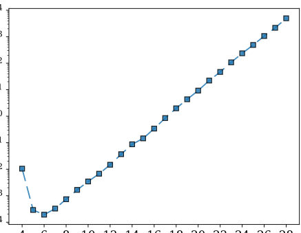
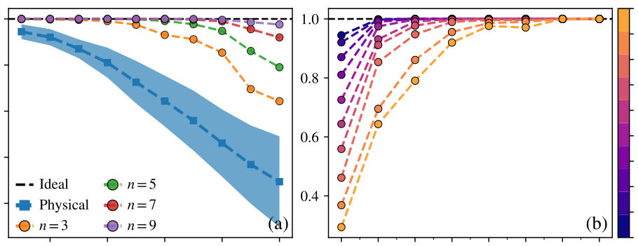
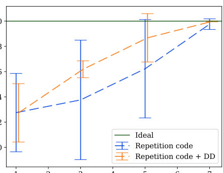
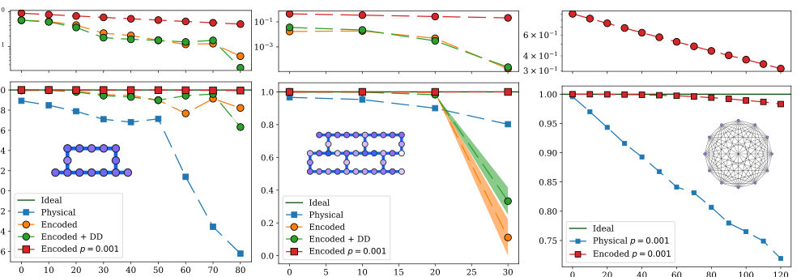
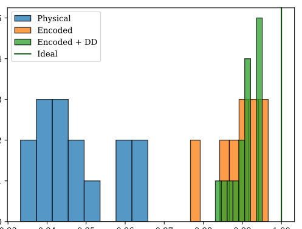
Summary. This paper evaluates how effectively quantum error detection can mitigate noise on real IBM quantum hardware. It shows that while larger codes can exponentially improve accuracy, the practical benefits are limited by a pseudothreshold where hardware overheads and circuit depth begin to outweigh error suppression.
Why it may be interesting. not directly relevant
Main problem. Investigating the scalability and performance of quantum error detection (QED) on real hardware, specifically addressing the trade-offs between error suppression and the overheads of sampling and classical processing.
Main result. The study demonstrates that QED can exponentially improve expectation value accuracy as code distance increases, though it identifies a pseudothreshold where increased circuit depth and SWAP gate overhead can eventually degrade performance.
Method. The authors perform a detailed benchmarking study using both real IBM quantum computers and noisy simulations, employing repetition and triangular color codes for memory and logical Bell state experiments.
Model / system. The experiments were conducted on IBM quantum hardware (including IBM Kyiv, Fez, and Boston) using the heavy-hex lattice topology and a global depolarizing noise model.
Key observables. Error-mitigated expectation values (e.g.,
Important parameters / regimes. Code distance (d), number of physical qubits (n), circuit depth (D), physical noise rate (p), and classical processing time.
Assumptions / limitations. Assumes that all occurring errors are correctable and that the operator commutes with the code projector; assumes a depolarizing noise model for certain derivations.
Figures summary. Figures illustrate the exponential scaling of classical processing time, the convergence of expectation values with increasing code distance, the crossover effect where larger codes perform worse at high depths, and the estimation of the pseudothreshold decay.
Paper structure. The paper begins by defining the benefits and scaling bottlenecks of QED, moves to experimental benchmarks on repetition and color codes, analyzes the impact of hardware topology and circuit depth, and concludes with a mapping of the error detection frontier (pseudothresholds).
Quantum error detection can produce unbiased expectation values that exponentially converge to noiseless results as the code distance is increased. Despite this, its performance as an error mitigation technique is relatively understudied on quantum hardware because of its two main drawbacks: (i) the number of samples increases exponentially in the circuit depth/noise level, and (ii) the classical processing generally grows exponentially in the code distance, though exceptions exist. Additionally, the constant (but often large) overhead of embedding the code and logical operations on hardware can make accuracy worse instead of better. In this work, we seek to provide a clear picture of these opportunities and challenges for scaling quantum error detection on hardware. We do so by performing a detailed benchmarking study on real and simulated noisy quantum computers, using the repetition code and triangular color code for memory experiments and logical computations with up to $74$ physical qubits. In addition to these benchmarks, we estimate the pseudothreshold of codes to map the frontier of error detection on current and future quantum computers. Despite the challenges, our results show strong promise for scaling quantum error detection on hardware.
Authors: Mitchell Bordelon, Maurice Garfinkel, Vivek Dixit, Thomas Whitehead, Jenny Holzbauer, Guillermo Mijares Vilarino, Alberto Maldonado Romo, Abhijit Mitra, Vaibhaw Kumar, Jean Utke
Type: both · Category: quantum information and computing · PDF: https://arxiv.org/pdf/2605.01169v1
Analysis basis: full PDF text, analyzed in chunks
Topic relevance: 🔥 QC/QI experiment 4/5
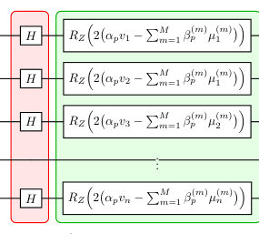
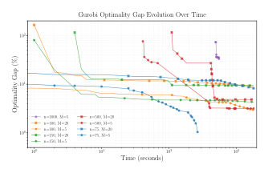
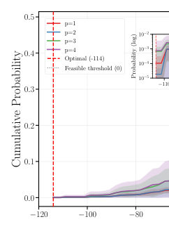
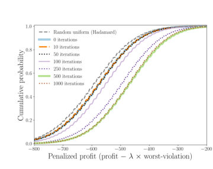
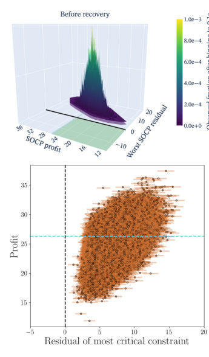
Summary. This paper presents a novel quantum-classical hybrid algorithm designed to solve stochastic optimization problems used in insurance underwriting. By combining a specialized QAOA-based circuit with a robust classical post-processing repair scheme, the authors demonstrate that quantum hardware can outperform traditional classical heuristics on large-scale, high-constraint problems.
Why it may be interesting. not directly relevant
Main problem. Solving the Chance-Constrained Knapsack Problem (CCKP), a stochastic combinatorial optimization problem where item weights are random variables and constraints must be met within a specific risk tolerance.
Main result. The proposed quantum-classical hybrid scheme achieves solution quality comparable to classical heuristics for small instances and outperforms them for larger, more complex instances (e.g., n=75, M=5).
Method. A hybrid framework using a QAOA-based variational circuit (LD-DA) on IBM Heron processors, combined with a parameter transfer strategy to mitigate barren plateaus and a self-consistent classical recovery scheme for post-processing noisy samples.
Model / system. A variational quantum circuit using a phase separator Hamiltonian (encoding values and mean weights) and a mixer Hamiltonian (using X and XX rotations) acting on a specific Hamming-weight sector of qubits.
Key observables. Measurement probability P(T) of target subsets, solution quality metric (closeness kappa to Gurobi), and constraint residual.
Important parameters / regimes. Number of items (n), number of constraints (M), weight variance (sigma^2), risk tolerance (epsilon), and circuit depth (p).
Assumptions / limitations. The weight distributions are assumed to be closed under convolution (specifically focusing on Normal distributions) to allow for deterministic reformulation.
Figures summary. Figure 1 shows the QAOA circuit architecture; Figure 2 compares Gurobi runtime and solution quality against heuristics; Figure 3 shows the CDF of loss values and the impact of the recovery algorithm; Figure 4 illustrates the evolution of profit distributions during fine-tuning.
Paper structure. The paper introduces the CCKP problem, proposes a deterministic reformulation via SOCP, details the quantum-classical hybrid architecture (ansatz, mixer, and parameter transfer), describes the classical post-processing recovery algorithm, presents experimental results on IBM hardware and MPS simulations, and compares performance against classical benchmarks.
The presence of stochastic elements in combinatorial optimization problems makes them particularly challenging, as such problems quickly become intractable for classical computers even at relatively small sizes. In this work, we propose a novel quantum-classical hybrid scheme for solving a class of stochastic optimization problems known as chance-constrained knapsack problems, in which item weights follow probability distributions and constraints may be violated within a specified risk tolerance. Our method employs knapsack-specific QAOA-based circuits to generate samples which, when combined with a self-consistent classical recovery scheme introduced in this work, produce high-quality solutions. Experiments carried out on IBM Heron processors, using circuits with depths up to 177 and comprising 3443 gates acting on as many as 150 qubits, yield solutions that indicate improvement over classical optimization schemes. The proposed quantum-classical scheme paves the way to tackling such problems, with the potential to outperform approaches that rely solely on classical computation.
Authors: Wuttichai Pankeaw, Teparksorn Pengpan, Pruet Kalasuwan
Type: theory · Category: strongly correlated electrons · PDF: https://arxiv.org/pdf/2605.02581v1
Analysis basis: full PDF text, analyzed in chunks
Topic relevance: 🔥 entanglement & information structure 4/5
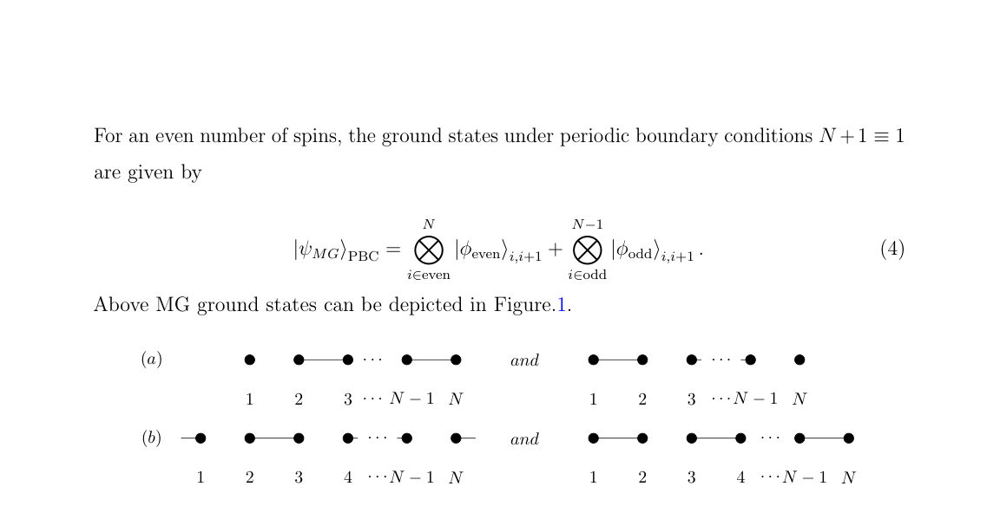
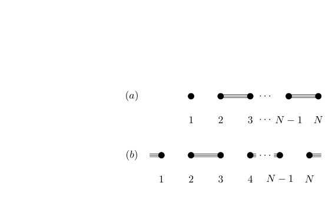
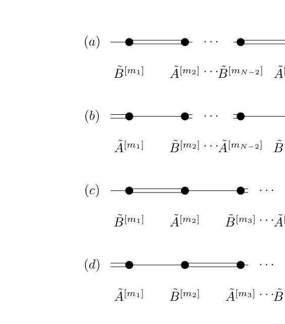
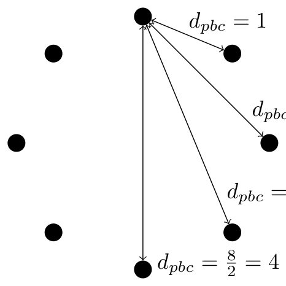
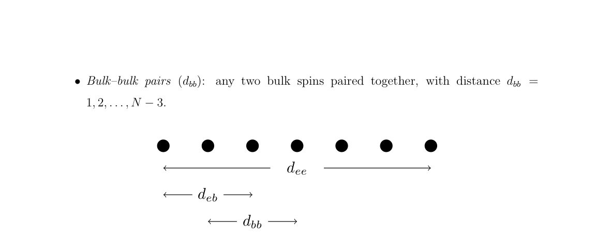
Summary. This paper demonstrates that entanglement entropy can act as a quantitative fingerprint to resolve the internal bond structure of frustrated spin chains. By analyzing different bipartitions, the authors show that the partially dimerized phase exhibits a unique multi-band signature in pairwise entropy that distinguishes it from the fully dimerized phase.
Why it may be interesting. not directly relevant
Main problem. Investigating whether von Neumann entanglement entropy can serve as a robust diagnostic tool to distinguish between different dimerized bond architectures (fully vs. partially dimerized) in frustrated spin chains.
Main result. The study establishes that entanglement entropy provides a clear fingerprint for bond patterns, specifically identifying a unique multi-band structure in pairwise entropy for the partially dimerized phase and specific saturation values for the fully dimerized phase.
Method. The authors use exact Matrix Product State (MPS) representations of valence-bond ground states and perform finite-size scaling analysis to extract thermodynamic limits.
Model / system. The study focuses on the spin-1/2 Majumdar-Ghosh model and the spin-3/2 J1-J2-J3 chain, which supports both fully dimerized (FD) and partially dimerized (PD) phases.
Key observables. von Neumann entanglement entropy (half-chain, single-site, and pairwise), entanglement spectrum, and correlation length.
Important parameters / regimes. Spin magnitude (S=1/2 and S=3/2), bond multiplicity, dimerization patterns, and boundary conditions (Periodic vs. Open).
Assumptions / limitations. The analysis is based on exact valence-bond ground states, which are specific types of gapped, non-critical states.
Figures summary. Figures illustrate dimer patterns and boundary configurations, plots of half-chain entropy convergence for MG, FD, and PD phases, single-site entropy showing edge effects, and pairwise entropy showing multi-band structures and distance-dependent correlations.
Paper structure. The paper introduces the problem of identifying bond architecture, describes the MPS construction for the studied spin models, presents entanglement entropy results for various bipartitions and boundary conditions, and concludes with a diagnostic comparison of scaling behaviors.
The von Neumann entanglement entropy of exact valence-bond ground states is studied in two frustrated one-dimensional spin chains: the spin-1/2 Majumdar-Ghosh (MG) model and the spin-3/2 J1-J2-J3 chain in its fully dimerized (FD) and partially dimerized (PD) phases. Using matrix-product-state representations, the entropy is computed as a function of system size for three complementary bipartitions - half-chain, single-site, and pairwise - under both open and periodic boundary conditions. In all cases, the entropy saturates to a finite constant in the thermodynamic limit, confirming area-law behavior. The saturation values, extracted via finite-size scaling, are directly related to the underlying virtual-spin bond structure. The MG model and FD phase exhibit similar entanglement behavior, differing primarily in saturation magnitude determined by spin value and bond multiplicity, and both display even-odd oscillations and exponential convergence with system size. In contrast, the PD phase shows qualitatively distinct signatures, including multiple half-chain saturation values depending on the bond type at the cut, asymmetric edge contributions in the single-site entropy, and a multi-band structure in the pairwise entropy reflecting the coexistence of single- and double-singlet bonds. These results establish entanglement entropy as a robust signature of frustrated bond architecture, enabling clear distinction among dimerized phases with different spin magnitude, bond multiplicity, and dimerization patterns.
Authors: Mitchell G. Peaks, Mia M. Kaarls, Crystal Noel
Type: experiment · Category: other · PDF: https://arxiv.org/pdf/2605.01132v1
Analysis basis: full PDF text, analyzed in chunks
Topic relevance: 🔥 QC/QI experiment 4/5
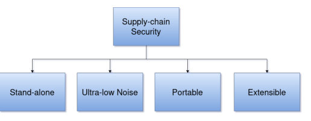
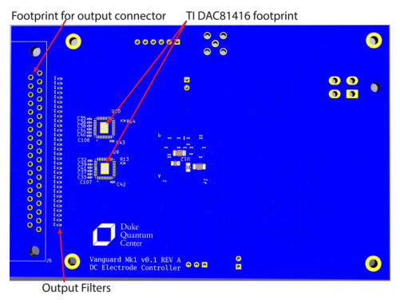
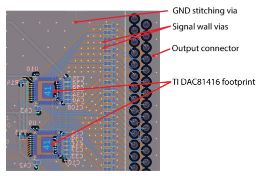
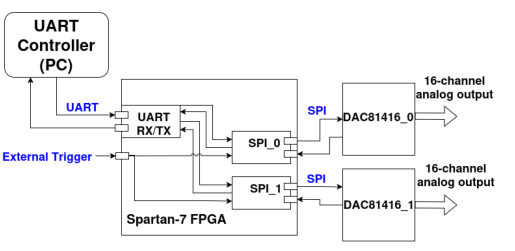
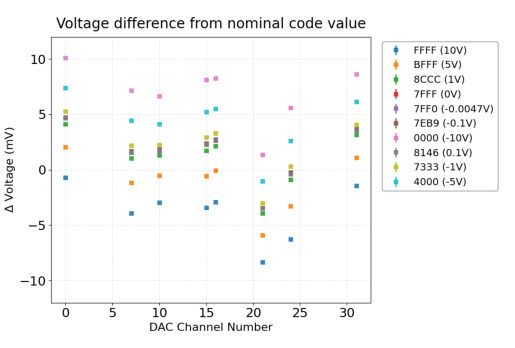
Summary. The paper presents the design of a low-cost, open-hardware DAC System-on-Module for precise control of ion-trap electrodes. It addresses the challenges of scalability and supply-chain security by using widely available components to achieve ultra-low noise performance. The resulting prototype is a viable, extensible platform for large-scale quantum computing applications.
Why it may be interesting. This provides the essential high-precision hardware infrastructure required to implement complex ion-shuttling and transport protocols in large-scale QCCD architectures, which is critical for scaling up ion-trap quantum computers.
Main problem. The need for a scalable, low-cost, and ultra-low noise DC electrode control system for ion-trap quantum technologies that avoids proprietary ecosystems and supply-chain vulnerabilities.
Main result. The development of the 'Vanguard DAC,' an open-hardware System-on-Module that achieves ultra-low noise performance (comparable to ground plane noise) and high-precision voltage control suitable for ion-trap applications.
Method. A mixed-signal PCB design utilizing a Texas Instruments DAC81416 and an AMD Xilinx Spartan-7 FPGA, featuring a two-stage linear voltage regulation strategy and an 8-layer stack-up for EMI mitigation.
Model / system. An open-hardware Digital-to-Analog Converter (DAC) System-on-Module (SoM) designed for controlling DC electrodes in trapped ion quantum computing, simulators, and sensors.
Key observables. Output noise density, power spectral density (PSD), voltage resolution (LSB), slew rate, settling time, and crosstalk between channels.
Important parameters / regimes. 16-bit resolution, +/-10 V output range, 50 MHz clock frequency, 48.22 kHz RC filter cutoff, and 1.76 V/us measured slew rate.
Assumptions / limitations. The design assumes that using OEM components and open-hardware architecture can effectively mitigate risks of component obsolescence and proprietary lock-in.
Figures summary. Figure 1 shows design requirements; Figure 2 presents CAD models of the SoM; Figure 3 shows PCB layout details; Figure 4 illustrates the control infrastructure; Figure 5 and 6 show voltage accuracy and inter-device offsets; Figure 7 displays the power spectral density; Figure 8 shows voltage transition waveforms.
Paper structure. The paper introduces the design requirements, describes the hardware architecture and power management, details the PCB engineering and implementation, presents performance characterization (noise, accuracy, and transient response), and concludes with future improvements.
A new design for an open-hardware Digital-to-Analog Converter System-on-Module is presented for low-noise ion-trap electrode control. The design specifications were established to fill the technical needs of a modular, scalable DC electrode control platform with sufficient bandwidth, noise characteristics and control flexibility. Critically, a priority was placed on supply-chain management considerations and cost effectiveness for scaling. The system is based upon the Texas Instruments DAC81416 and AMD Xilinx Spartan-7 FPGA for the analog signal and compute architecture respectively. Performance characterization of a prototype device suggests the design is suitable for a variety of ion-trap physics experiments and quantum computing applications.
Authors: Oliver Knitter, Sang Hyub Kim, Maximilian Wurzer, Jonathan Mei, Claudio Girotto, Karen Horovitz, Chi Chen, Masako Yamada, Frederik F. Flöther, Martin Roetteler
Type: both · Category: quantum information and computing · PDF: https://arxiv.org/pdf/2605.02798v1
Analysis basis: full PDF text, analyzed in chunks
Topic relevance: 🔥 QC/QI experiment 4/5
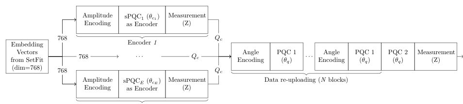
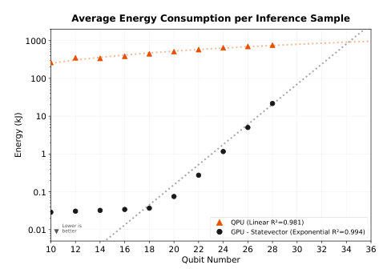
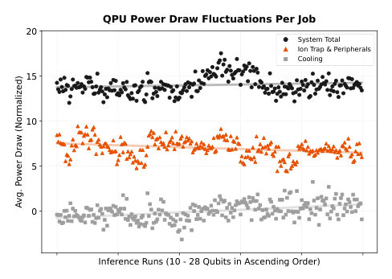
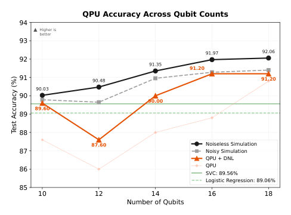
Summary. This paper presents an experimental study measuring the actual power consumption of a trapped-ion quantum processor during AI fine-tuning tasks. It demonstrates that while classical simulations scale exponentially in energy, quantum processors show linear scaling, suggesting a clear energy advantage for quantum computing at around 34 qubits. Furthermore, it shows that quantum-enhanced models can outperform classical counterparts in text classification accuracy.
Why it may be interesting. not directly relevant
Main problem. Evaluating the energy-to-solution (ETS) and classification accuracy of hybrid quantum-classical pipelines for fine-tuning foundational AI models, specifically comparing QPU efficiency against GPU-based classical simulations.
Main result. The study identifies a break-even point for energy-to-solution at approximately 34 qubits, where QPUs become more efficient than GPUs, and demonstrates that quantum fine-tuned models can achieve a 24% improvement in classification error over classical baselines.
Method. The researchers used direct electrical instrumentation of an IonQ Forte Enterprise processor to measure power draw and applied a hybrid pipeline involving a Sentence Transformer and a parameterized quantum circuit (PQC) with error mitigation techniques like debiasing and non-linear aggregation.
Model / system. The experimental platform is an IonQ Forte Enterprise trapped-ion quantum processor. The computational model is a hybrid QML architecture using a BERT-based encoder (SetFit) followed by a PQC with angle encoding and data re-uploading.
Key observables. Classification accuracy (error rate), Energy-to-Solution (ETS), power draw (kW), and Z-basis expectation value
Important parameters / regimes. Qubit counts (10 to 28), circuit depth, number of re-uploads (R=4), and power draw of the QPU (~5 kW) vs GPU (~0.072 kW).
Assumptions / limitations. Assumes that the energy-to-solution metric is a scalable metric for future applications; assumes gate counts scale linearly with qubit number; assumes training on classical simulators is a valid precursor to hardware execution.
Figures summary. Figure 1 shows the hybrid architecture; Figure 2 is a semilog plot of energy scaling (linear QPU vs exponential GPU); Figure 3 shows QPU power draw stability; Figure 4 compares classification accuracy across different qubit counts and noise regimes.
Paper structure. The paper introduces the problem of energy efficiency in QML, describes the hybrid architecture and error mitigation pipeline, presents the experimental setup for energy and accuracy measurements, compares results against classical baselines (SVM, LR) and simulations (MPS, statevector), and concludes with scaling analysis.
We present an experimental study of energy-to-solution (ETS) of hybrid quantum-classical applications, enabled by direct instrumentation of power consumption of a Forte Enterprise trapped-ion quantum processor. We apply this methodology to a hybrid quantum-classical pipeline for quantum fine-tuning of foundational AI models, and validate the approach end-to-end on quantum hardware. Despite noise and limited qubit counts, the resulting models achieve accuracy competitive with and exceeding classical baselines such as logistic regression and support vector classifiers. Our results show that QPU energy consumption scales approximately linearly with qubit number for shallow circuits, while classical simulation exhibits exponential scaling, indicating a break-even for ETS around 34 qubits. The classification error improvement of the best quantum fine-tuned model over the best classical fine-tuned model considered in this study is around 24%. We further contextualize these findings with comparisons to tensor network methods. This work establishes energy-to-solution as a measurable and scalable metric for evaluating quantum applications and provides experimental evidence of favorable energy-accuracy trade-offs.
Authors: Joshua M. Courtney
Type: theory · Category: quantum information and computing · PDF: https://arxiv.org/pdf/2605.02498v1
Analysis basis: full PDF text, analyzed in chunks
Topic relevance: 🔥 Rydberg arrays 4/5
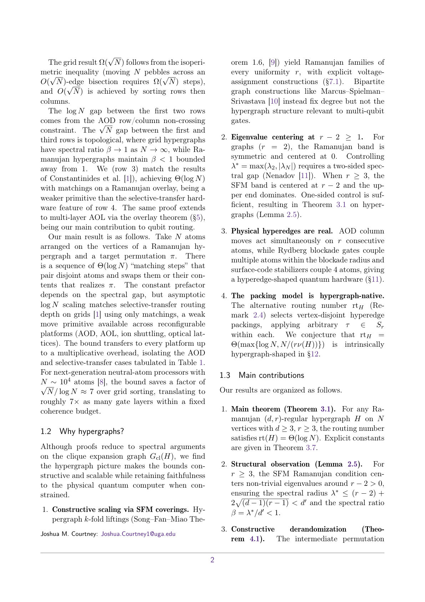
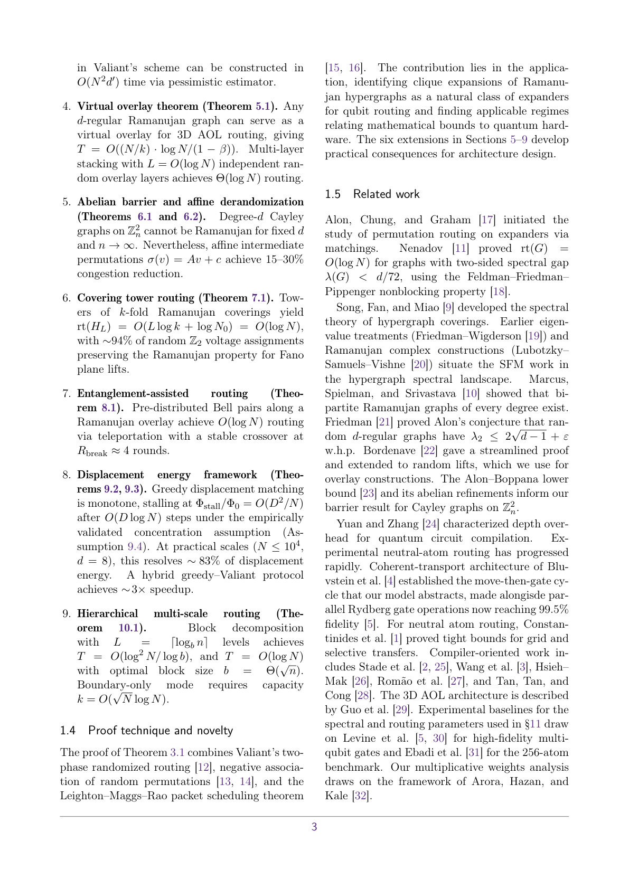
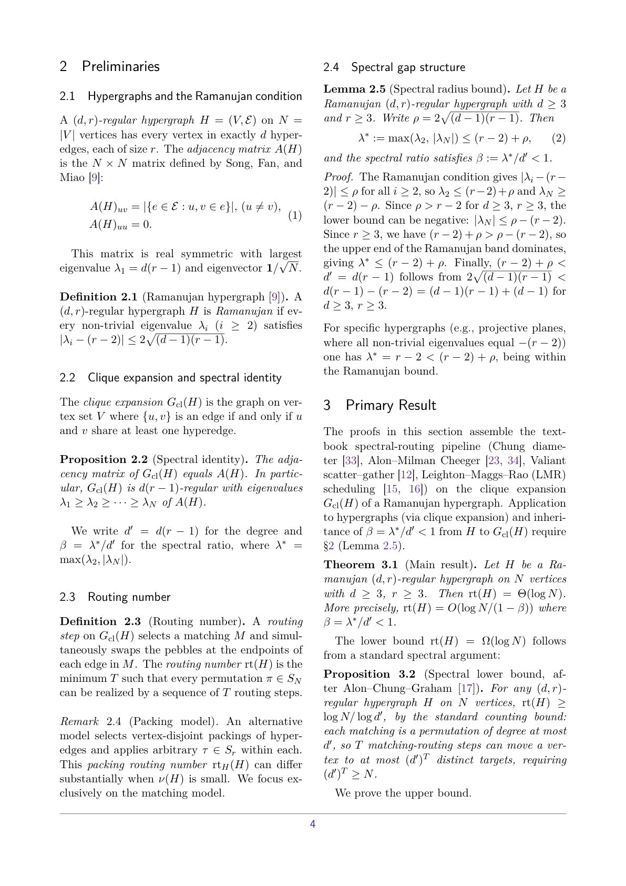
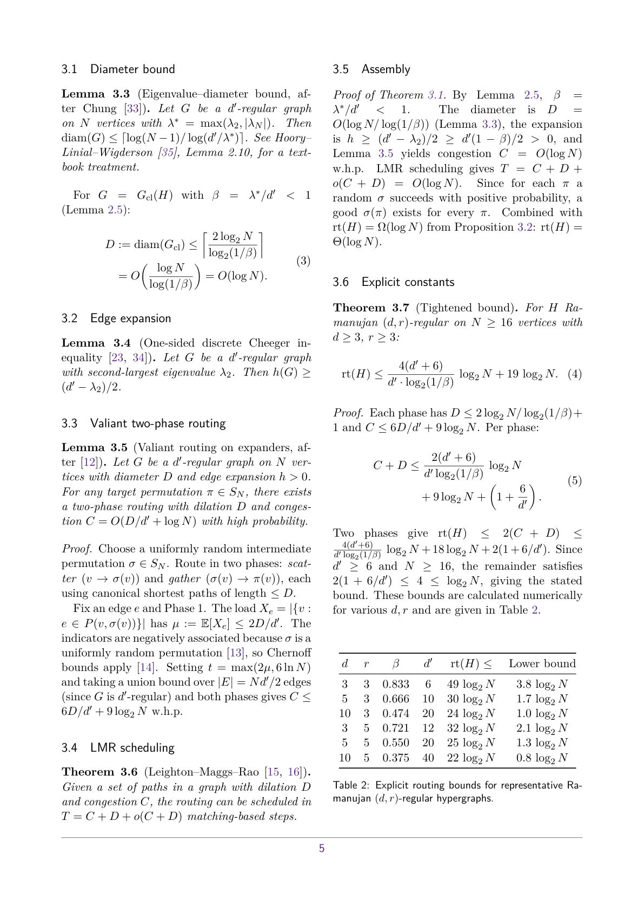
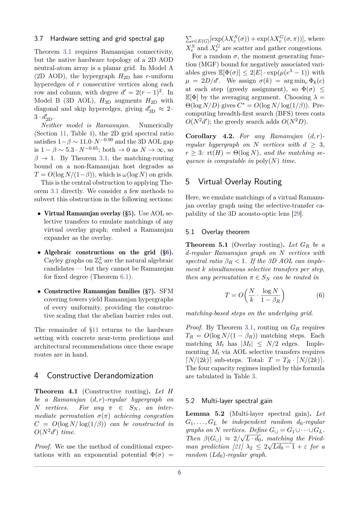
Summary. The paper demonstrates that using Ramanujan hypergraphs as connectivity overlays can reduce the time required to rearrange atoms in a quantum processor from polynomial to logarithmic scaling. It introduces several advanced routing protocols, including hybrid greedy-Valiant and entanglement-assisted methods, to optimize large-scale neutral-atom architectures.
Why it may be interesting. It provides a rigorous mathematical blueprint for designing the connectivity of next-generation quantum processors, specifically showing how expander-like hypergraph topologies can overcome the scaling bottlenecks of 2D/3D grids.
Main problem. Optimizing the permutation routing of atoms in reconfigurable neutral-atom quantum architectures to minimize routing depth and latency.
Main result. Proves that routing on Ramanujan (d,r)-regular hypergraphs achieves a logarithmic depth of Theta(log N), providing a significant speedup over standard grid-based routing.
Method. Uses hypergraph theory, spectral analysis of the clique expansion graph, and Valiant's two-phase randomized routing algorithm.
Model / system. Reconfigurable neutral-atom arrays (e.g., optical tweezers, AOD, or AOL architectures) where qubits are encoded in atoms and entangling gates are performed via Rydberg blockade.
Key observables. Routing number (rt(H)), routing depth (T), spectral ratio (beta), and displacement energy (Phi_t).
Important parameters / regimes. Number of atoms (N), hypergraph degree (d) and uniformity (r), capacity (k), and the crossover threshold for entanglement-assisted routing (R_break approx 4).
Assumptions / limitations. Assumes the effectiveness of covering towers relies on a uniform spectral bound; assumes a matching-model where edge-disjoint swaps can be performed simultaneously.
Figures summary. Tables comparing routing regimes, routing bounds for various hypergraphs, and trade-offs between AOL capacity and routing depth.
Paper structure. The paper introduces the routing problem in neutral atom arrays, develops a mathematical framework using Ramanujan hypergraphs, analyzes specific architectural models (2D AOD and 3D AOL), explores algebraic constructions and their limits (Abelian Alon-Boppana barrier), and evaluates advanced strategies like hierarchical and entanglement-assisted routing.
We consider the routing of neutral atoms on a reconfigurable lattice in terms of hypergraph transformations. We prove the routing number of a Ramanujan $(d,r)$-regular hypergraph on $N$ vertices satisfies $\mathrm{rt}(H) = Θ(\log N)$, where routing is via matchings in the clique expansion graph $G_{\mathrm{cl}}(H)$. Hypergraphs reframe the qubit routing problem by replacing Nenadov's two-sided spectral gap hypothesis with a one-sided condition based on eigenvalue centering. Song--Fan--Miao (SFM) coverings scale for Ramanujan families of every uniformity. A virtual overlay theorem establishes a capacity--depth tradeoff for 3D acousto-optic lens (AOL) architectures, with multi-layer stacking achieving $Θ(\log N)$ routing with $L = O(\log N)$ independent overlay layers. An abelian Alon--Boppana barrier shows that fixed-degree Cayley graphs on $\mathbb{Z}_n^2$ cannot be Ramanujan and affine derandomization on such graphs achieves 15--30% congestion reduction. Towers of $k$-fold Ramanujan coverings yield $\mathrm(H_L) = O(\log N)$ by recursive routing lift. Entanglement-assisted routing by pre-distributed Bell pairs achieves $O(\log N)$ teleportation depth with a stable crossover at $\sim\!4$ routing rounds. Displacement energy analyzes greedy adaptive routing, identifying stalling and a hybrid greedy--Valiant protocol achieving $\sim\!3\times$ speedup at practical scales. Hierarchical multi-scale routing achieves $O(\log^2 N / \log b)$ depth with boundary-only transfers at capacity $k = O(\sqrt{N} \log N)$, and $O(\log N)$ depth with optimal block size $b = Θ(\sqrt{n})$.
Authors: Chen-Te Ma, Ma-Ke Yuan
Type: theory · Category: quantum information and computing · PDF: https://arxiv.org/pdf/2605.02097v1
Analysis basis: full PDF text, analyzed in chunks
Topic relevance: 🔥 entanglement & information structure 4/5
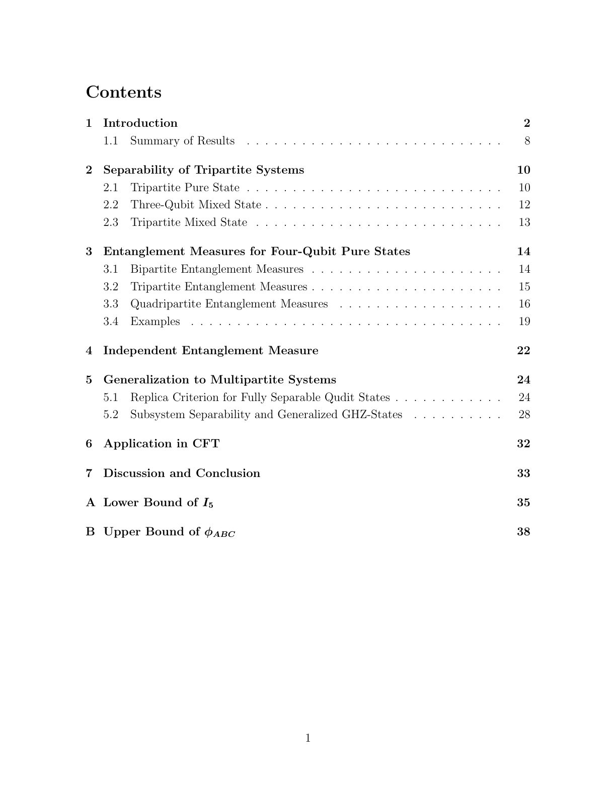
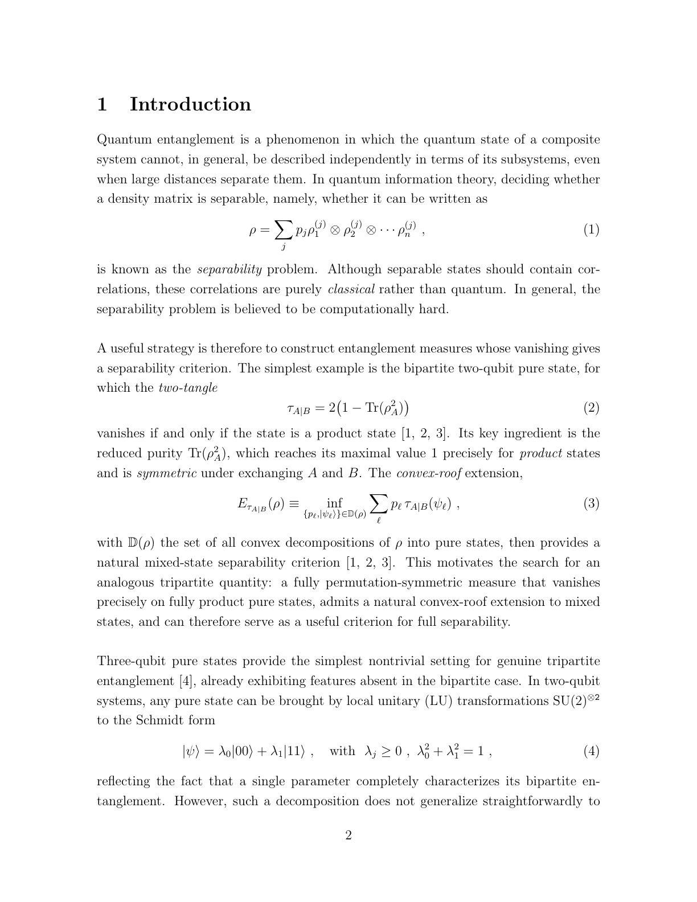
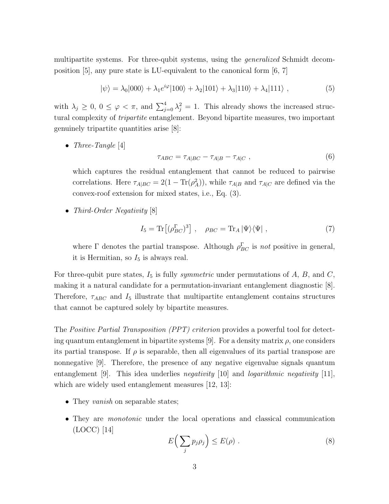
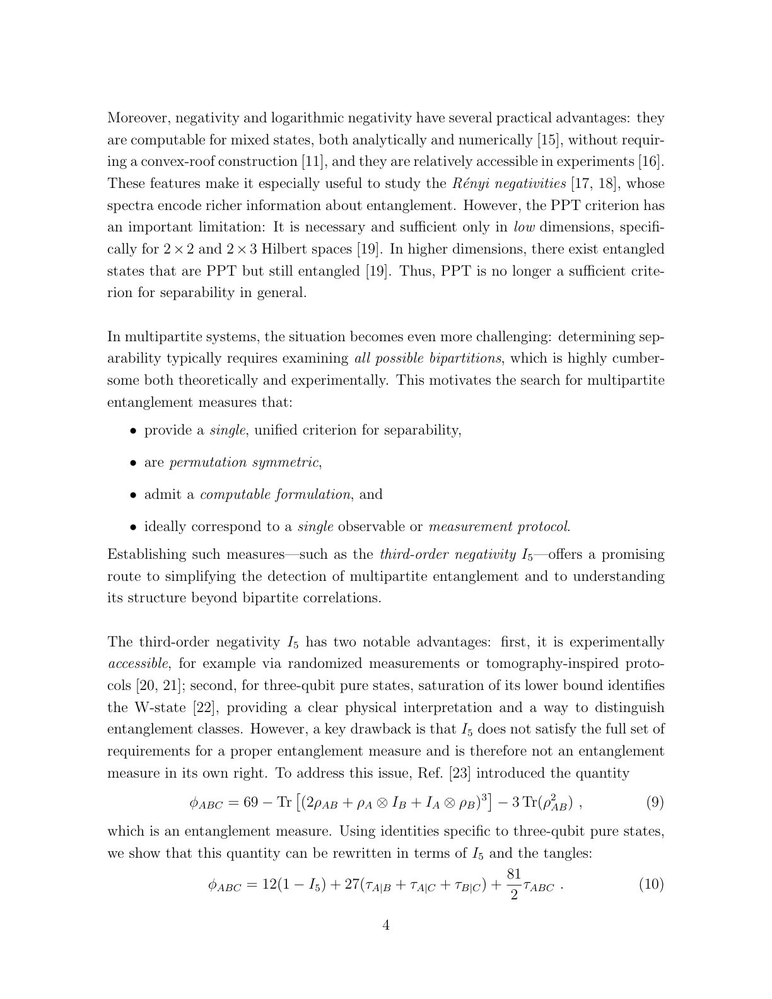
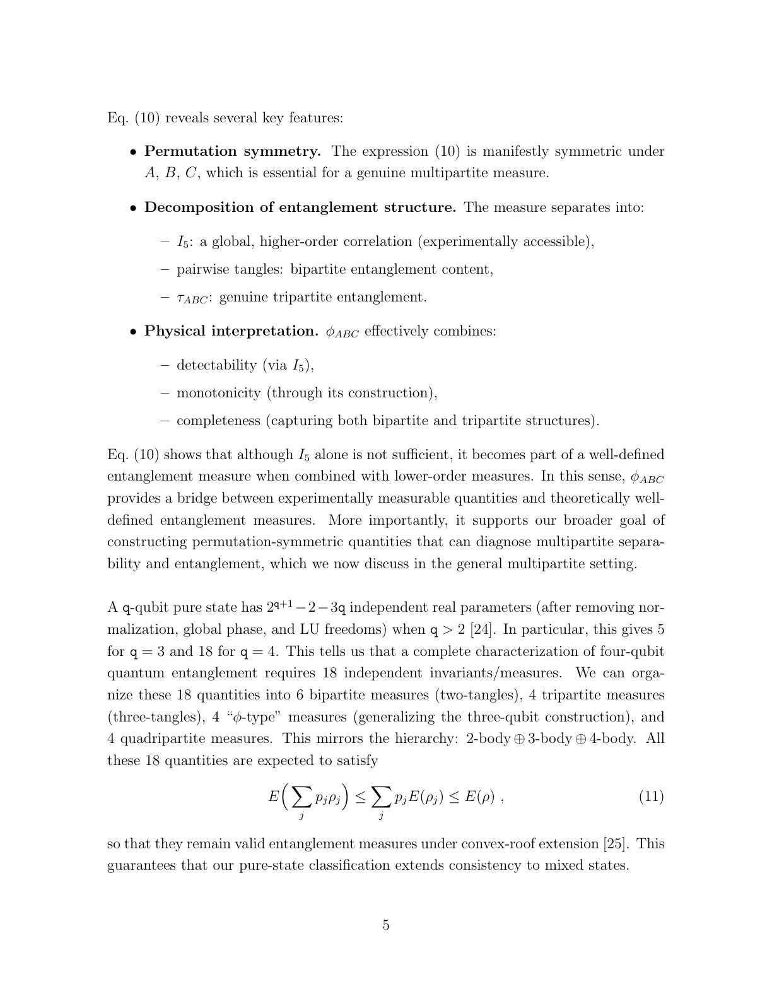
Summary. This paper establishes new, computable criteria for determining the full separability of multipartite quantum states using third-order negativity. It provides a complete classification of entanglement measures for four-qubit systems and demonstrates how these algebraic invariants can be applied to study entanglement in Conformal Field Theory.
Why it may be interesting. This work provides fundamental tools for characterizing multipartite entanglement, which is essential for understanding complex correlations in many-body dynamics and quantum information processing.
Main problem. The paper addresses the difficulty of classifying multipartite entanglement and establishing necessary and sufficient criteria for full separability in multi-qubit and multi-qudit systems.
Main result. The authors prove that the third-order negativity (I5) is a necessary and sufficient criterion for the full separability of tripartite pure states and develop a complete set of 18 independent entanglement measures for four-qubit pure states.
Method. The study employs invariant theory, the replica trick, convex-roof extensions for mixed states, and algebraic decomposition of hyperdeterminants.
Model / system. The research focuses on multipartite quantum systems, specifically 3-qubit and 4-qubit pure and mixed states, as well as general q-partite qudit systems and applications to 2D Conformal Field Theory.
Key observables. Third-order negativity (I5), three-tangle, two-tangle, four-tangle, and the hyperdeterminant.
Important parameters / regimes. Central charge (c) in CFT, number of qubits/qudits (q), and the large-c limit.
Assumptions / limitations. The analysis assumes the use of local unitary transformations for classification and relies on the compact nature of the parameter simplex for finding extrema.
Figures summary. Figure 1 provides graphical notation for tripartite wavefunctions and the construction of the 2nd Renyi multi-entropy.
Paper structure. The paper begins by establishing separability criteria for tripartite states, moves to the classification of 4-qubit entanglement measures, generalizes these findings to q-partite qudit systems, and concludes with applications to Conformal Field Theory.
We show that the third-order negativity provides a necessary and sufficient criterion for full separability of tripartite pure states, and extend this to mixed states beyond bipartite diagnostics such as negativity. As a minimal nontrivial example, a four-qubit pure state has three-qubit mixed reductions; its complete characterization requires six bipartite, eight tripartite, and four quadripartite measures, with the third-order negativity serving as a key separability criterion. We further generalize these separability criteria to multipartite qudit systems and discuss an application to conformal field theory.
Authors: Yevgen Kotukh
Type: both · Category: quantum information and computing · PDF: https://arxiv.org/pdf/2605.02051v1
Analysis basis: full PDF text, analyzed in chunks
Topic relevance: 🔥 QC/QI experiment 4/5
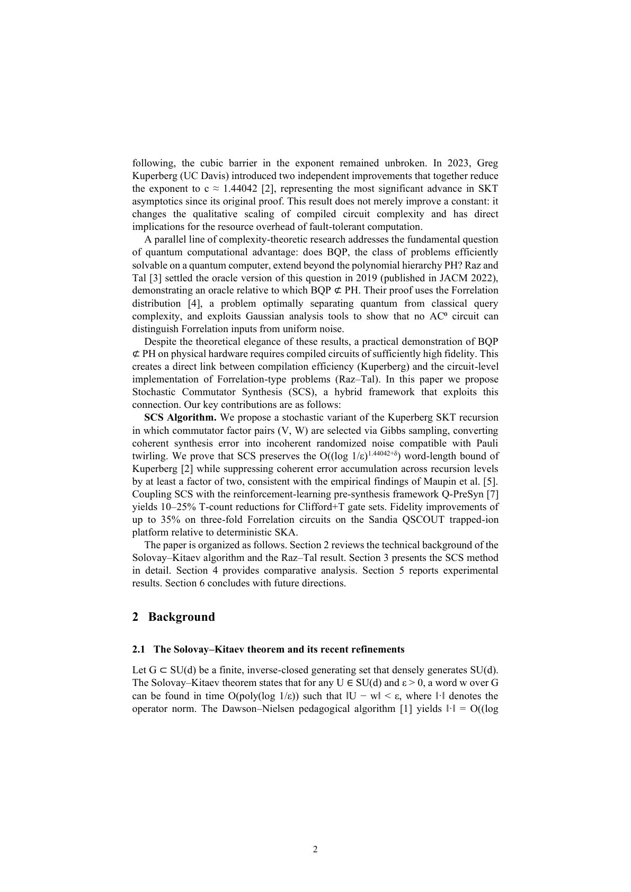
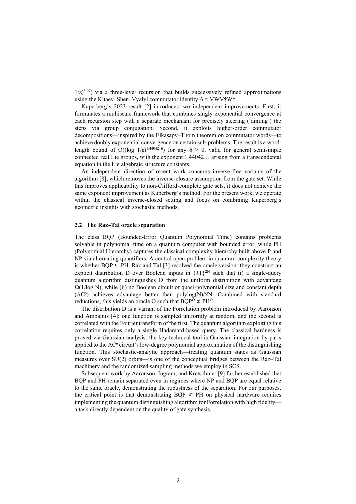
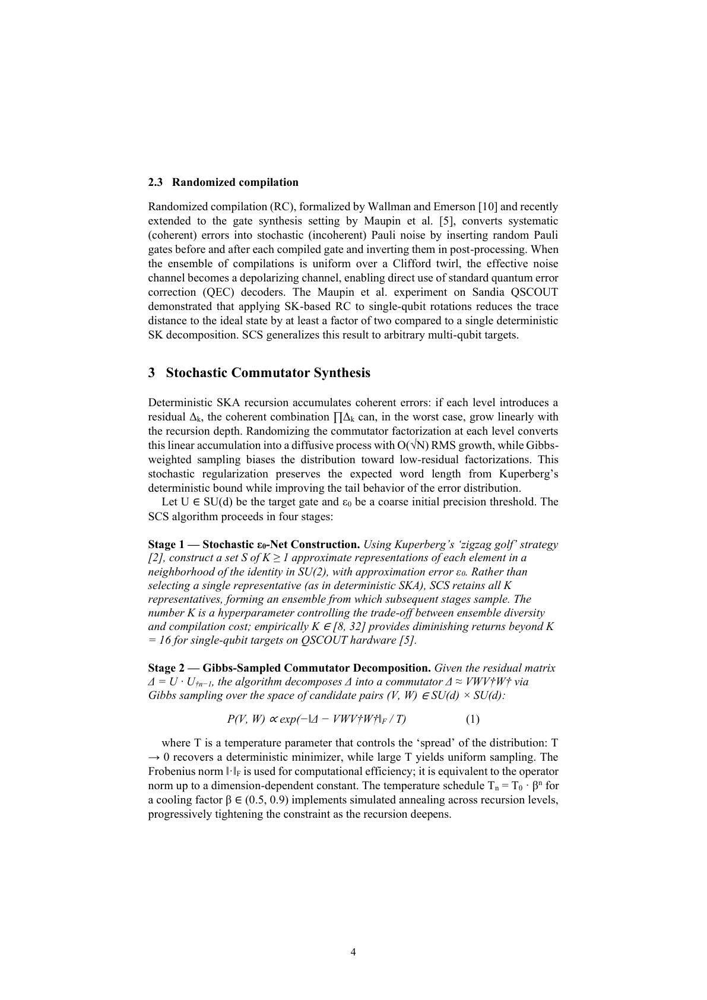
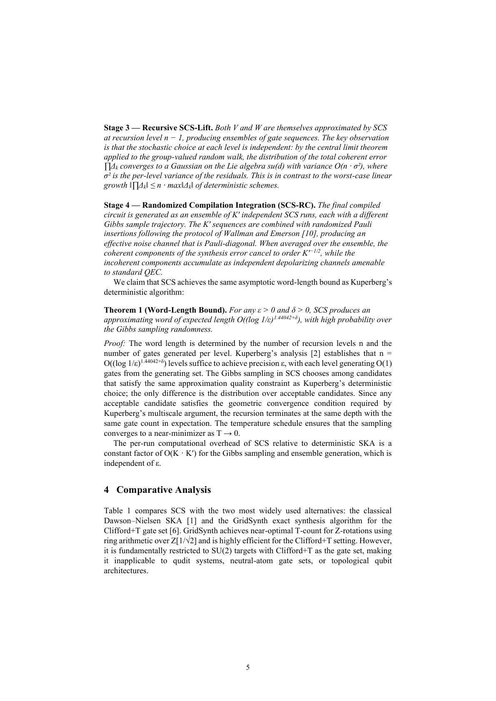
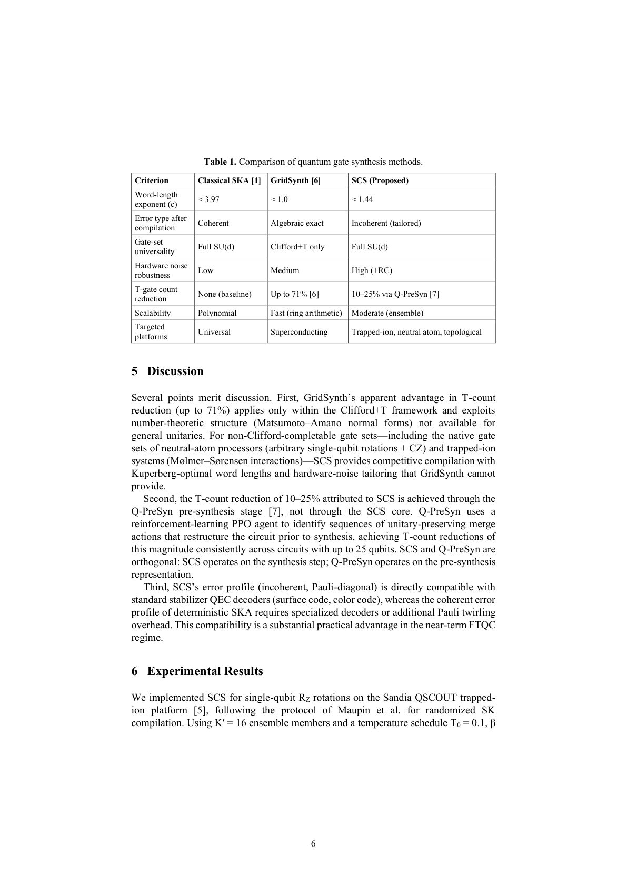
Summary. This paper introduces Stochastic Commutator Synthesis, a new method for quantum gate compilation that combines efficient sub-cubic scaling with randomized compilation. By using Gibbs sampling to decompose commutators, it transforms harmful coherent errors into manageable incoherent noise, significantly improving circuit fidelity on trapped-ion hardware.
Why it may be interesting. not directly relevant
Main problem. The challenge of efficiently approximating arbitrary unitary operators using a discrete gate set while minimizing word length and preventing the accumulation of coherent approximation errors that degrade fault-tolerant thresholds.
Main result. The SCS framework achieves sub-cubic word-length scaling, reduces T-count by 10-25%, and demonstrates up to a 35% fidelity improvement on Forrelation circuits by converting coherent errors into incoherent noise.
Method. A hybrid framework integrating Kuperberg's sub-cubic algorithm with Randomized Compilation (RC) using Gibbs-sampled commutator decomposition and RL-guided pre-synthesis (Q-PreSyn).
Model / system. The framework is implemented and tested on the Sandia QSCOUT trapped-ion hardware using multi-fold Forrelation circuits and Clifford+T gate sets.
Key observables. Process fidelity, T-count, word-length exponent, trace distance, and operator/Frobenius norms.
Important parameters / regimes. Sub-cubic exponent c approx 1.44042, ensemble size K in [8, 32], temperature schedule with cooling factor beta in (0.5, 0.9), and precision epsilon between 2^-8 and 2^-12.
Assumptions / limitations. Operates within the classical inverse-closed gate set setting.
Figures summary. The paper includes a comparison table of SCS, classical SKA, and GridSynth across various performance criteria.
Paper structure. The paper introduces the problem of gate synthesis, presents the SCS framework (ensemble generation, Gibbs sampling, and recursive lifting), integrates it with RC and Q-PreSyn, demonstrates experimental results on Sandia QSCOUT, and situates the work within the complexity-theoretic context of the Raz-Tal oracle separation.
We present Stochastic Commutator Synthesis, a hybrid quantum gate compilation framework that integrates Kuperberg's sub-cubic Solovay-Kitaev exponent c near 1.44042 with the error-tailoring machinery of randomized compilation. Classical Solovay-Kitaev implementations produce known word lengths and accumulate coherent approximation errors that degrade fault-tolerant threshold estimates. Kuperberg's 2023-2025 result reduces this via doubly exponential convergence and higher-order commutator decompositions. SCS augments this geometric backbone with a Gibbs-sampled stochastic choice of commutator factors at each recursion level, converting coherent synthesis residuals into incoherent, Pauli-twirl-compatible noise -- a property exploited by RC. Combined with RL-guided pre-synthesis, SCS achieves consistent T-count reductions of 10-25 percent and demonstrates fidelity gains of up to 35 percent on multi-fold Forrelation circuits on trapped-ion hardware such as Sandia QSCOUT. We situate SCS within the complexity-theoretic landscape established by the Raz-Tal oracle separation, arguing that low-error, noise-robust compilation of Forrelation-type circuits constitutes a practical pathway toward demonstrating this separation on physical hardware.
Authors: Keshav Das Agarwal, Tanoy Kanti Konar, Leela Ganesh Chandra Lakkaraju, Aditi Sen De
Type: theory · Category: quantum information and computing · PDF: https://arxiv.org/pdf/2605.01912v1
Analysis basis: full PDF text, analyzed in chunks
Topic relevance: correlated / nonlocal dissipation 3/5 · entanglement & information structure 3/5 · non-equilibrium dynamics 3/5 · driven-dissipative phase transition 2/5 · non-equilibrium universality 2/5 · quantum measurements 2/5
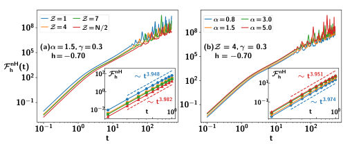
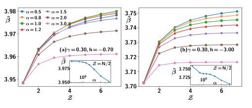
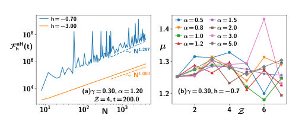
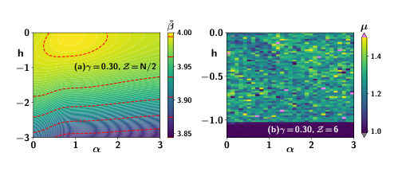
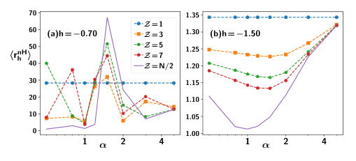
Summary. This paper demonstrates that the combination of long-range interactions and non-Hermiticity can significantly boost the sensitivity of quantum sensors during the transient evolution of a spin system. While it provides a clear advantage for dynamical sensing, the authors establish that this benefit does not extend to the estimation of parameters in stationary states.
Why it may be interesting. It reveals a genuine metrological advantage arising from the synergy of non-unitary dynamics and long-range connectivity, providing new insights into how non-Hermitian many-body dynamics can be leveraged for enhanced quantum sensing.
Main problem. Investigating how the interplay between long-range interactions and non-Hermiticity can enhance quantum sensing performance, specifically for parameter estimation of magnetic fields and anisotropy.
Main result. The study finds that long-range interactions and non-Hermiticity synergistically enhance the dynamical Quantum Fisher Information (QFI) in the transient regime, though no genuine advantage is found for stationary-state sensing.
Method. The authors use a mathematical framework involving Jordan-Wigner and Fourier transformations to analyze the spectrum of a non-Hermitian Hamiltonian and calculate the dynamical and stationary Quantum Fisher Information (QFI).
Model / system. A one-dimensional, long-range, RT-symmetric non-Hermitian iXY spin model with power-law decaying interactions, effectively modeled as a spin-1/2 lattice coupled to a reservoir.
Key observables. Quantum Fisher Information (QFI) for the transverse magnetic field (h) and anisotropy parameter (gamma), and scaling exponents (mu and beta).
Important parameters / regimes. Decay exponent (alpha), coordination number (Z), non-Hermiticity parameter (gamma), magnetic field (h), and the broken/unbroken phase regimes.
Assumptions / limitations. Periodic boundary conditions are assumed, and the analysis focuses on a system initialized in a fully polarized state.
Figures summary. Figures show the ratio of non-Hermitian to Hermitian QFI versus alpha, the scaling of QFI with system size near exceptional points, and the lack of improvement in stationary scaling with increased coordination number.
Paper structure. The paper introduces the non-Hermitian long-range model, provides an analytical framework for its momentum-space decomposition, analyzes the metrological performance in both dynamical and stationary regimes, and concludes with a no-go result for stationary sensing.
Long-range (LR) quantum spin systems offer promising advantages for quantum information processing and sensing. Here, we investigate parameter estimation in an long-range XX spin model coupled to a reservoir, which gives rise to an effective long-range RT-symmetric non-Hermitian iXY Hamiltonian. The interactions extend up to a tunable coordination range and decay algebraically with distance, enabling a direct comparison between long-range and short-range (SR) regimes. Focusing on the estimation of the transverse magnetic field and anisotropy parameter, we initialize the system in a fully polarized state and analyze the resulting dynamical quantum Fisher information (QFI). We show that, with suitable tuning of the system parameters, both the time and system-size scaling of the QFI are enhanced in the LR regime relative to their SR counterparts. Moreover, the non-Hermitian LR model can exhibit superior dynamical QFI compared with the corresponding Hermitian model, demonstrating a genuine metrological advantage induced by the interplay of long-range interactions and non-Hermitian effects. In contrast, we establish a no-go result at the critical magnetic field: when the probe is prepared in the lowest-energy eigenstate, the QFI scaling remains identical for the Hermitian and non-Hermitian cases.
Authors: V. V. Ryazanov
Type: theory · Category: statistical mechanics · PDF: https://arxiv.org/pdf/2605.01788v1
Analysis basis: full PDF text, analyzed in chunks
Topic relevance: non-equilibrium dynamics 3/5 · non-equilibrium universality 3/5 · Keldysh / 2PI / non-Gaussian methods 2/5 · correlated / nonlocal dissipation 2/5 · driven-dissipative phase transition 2/5
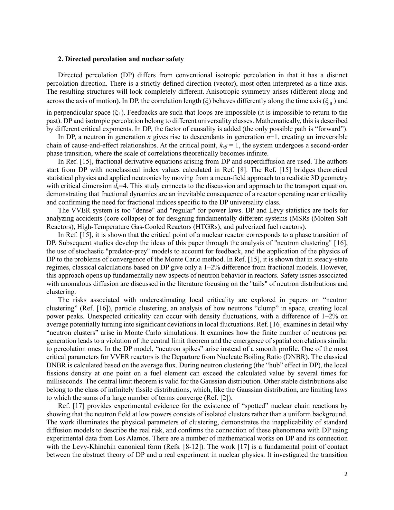
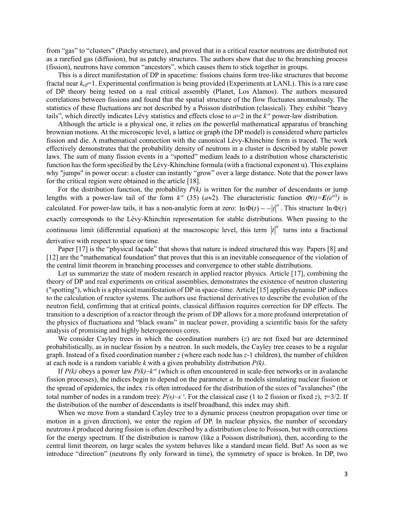
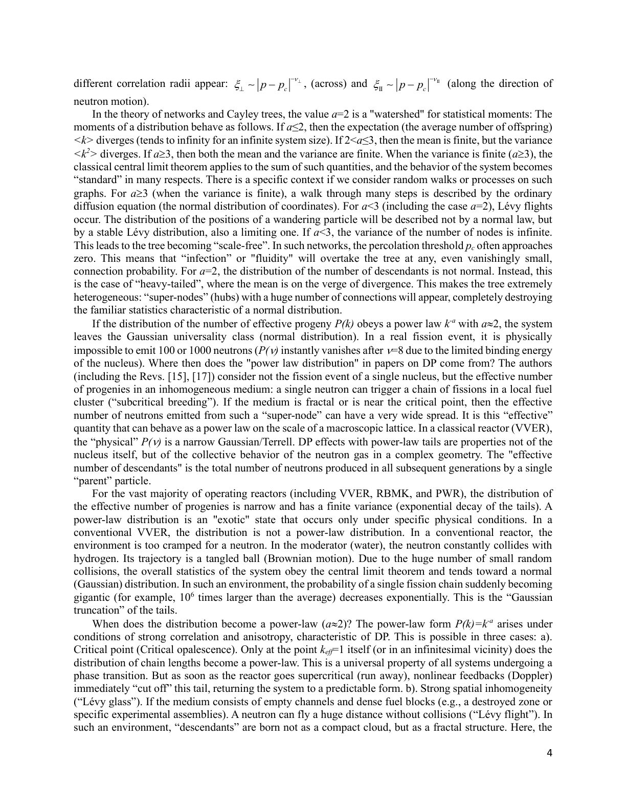
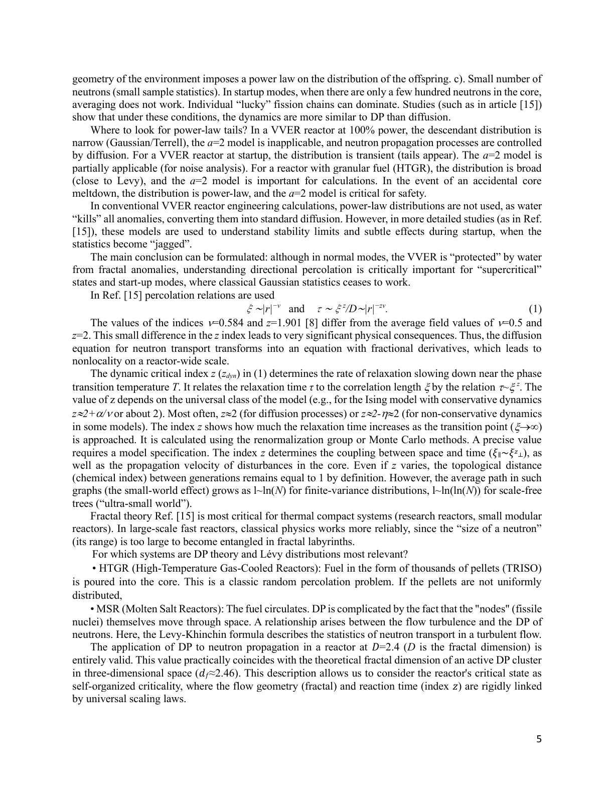
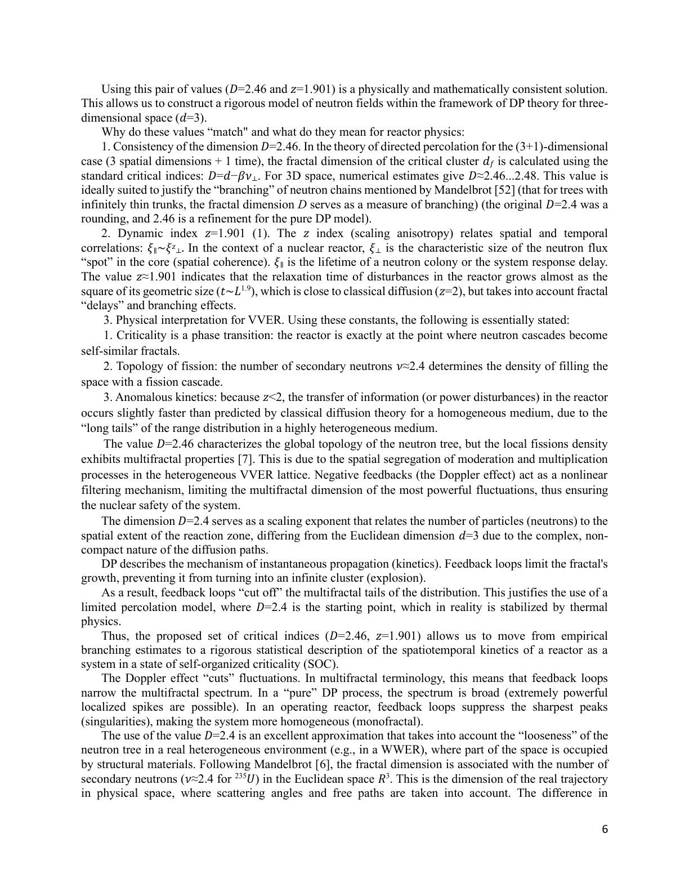
Summary. This paper applies directed percolation theory to nuclear reactor safety, arguing that neutron transport in heterogeneous media can exhibit heavy-tailed, power-law fluctuations. It shows that these 'Lévy-type' bursts can lead to rapid power excursions that traditional Gaussian-based safety systems might fail to detect. The study highlights that the most significant risk occurs at the mesoscale of fuel assemblies.
Why it may be interesting. The use of directed percolation, Lévy flights, and fractional dynamics to describe the transition from normal to anomalous diffusion is highly relevant to researchers studying non-equilibrium phase transitions and stochastic processes in many-body systems.
Main problem. Investigating whether directed percolation (DP) theory and heavy-tailed Lévy statistics can better predict extreme, rapid power transients in nuclear reactors than traditional Gaussian diffusion models.
Main result. The paper demonstrates that in certain regimes (especially at the fuel assembly scale), neutron transport follows DP-like behavior with power-law tails, leading to a 'time deficit' where dangerous power surges occur faster than predicted by classical models.
Method. The author uses the mathematical framework of fractional calculus, Lévy-Khinchin statistics, and the Lundberg equation to analyze the First-Passage Time (FPT) of neutron flux fluctuations.
Model / system. The physical system is a nuclear reactor (specifically VVER, HTGR, and MSR types) modeled as a directed percolation process in (3+1) dimensions, where neutron generations create an anisotropic, time-oriented chain of cause-and-effect.
Key observables. Neutron noise, power spectral density, neutron flux fluctuations, and First-Passable Time (FPT) to reach critical power thresholds.
Important parameters / regimes. Effective multiplication factor (k_eff = 1 at criticality), stability index (alpha), correlation lengths (xi_parallel and xi_perpendicular), and the truncation parameter (lambda) related to reactor geometry.
Assumptions / limitations. The system is assumed to operate near a second-order phase transition (Self-Organized Criticality); the model assumes a preferred direction in time and uses truncated Lévy flights to account for finite reactor size.
Paper structure. The paper progresses from establishing the DP theoretical framework to applying it to specific reactor types, analyzing the mathematical transition from Gaussian to Lévy statistics, evaluating the impact of geometric truncation and Doppler feedback, and concluding with safety implications for instrumentation and control.
Neutron behavior in a nuclear reactor is described using a directed percolation model. The preferred direction is created by generations of neutrons oriented in time. Using the example of the time it takes for a dangerous neutron flux or reactor power limit to be reached, it is shown that in certain situations, the proposed approach can identify events hazardous to reactor safety that are undetectable by traditional reactor safety systems.
Authors: Gustav J L Jäger, Krzysztof Bieniasz, Martin B Plenio, Hans-Martin Rieser
Type: theory · Category: disordered systems and neural networks · PDF: https://arxiv.org/pdf/2605.02385v1
Analysis basis: full PDF text, analyzed in chunks
Topic relevance: entanglement & information structure 3/5 · methods for driven-dissipative 3/5 · quantum measurements 3/5 · measurement-induced transitions 2/5
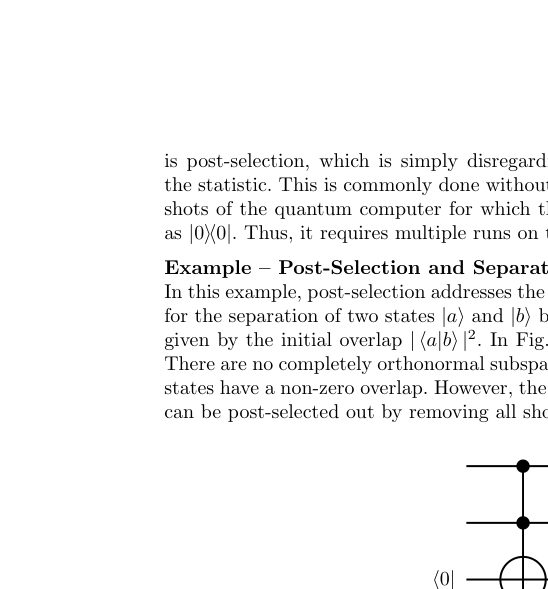
Summary. This paper introduces a unified 'Hybrid Tensor Network' framework that allows for a smooth mathematical transition between classical and quantum machine learning models. By identifying post-selection as the key mechanism for introducing non-linearity, the authors propose a new hyperparameter that can be trained to improve quantum model performance and overcome barren plateaus.
Why it may be interesting. It provides a rigorous way to bridge classical and quantum information processing, offering a new tool (post-selection hyperparameter) to mitigate common QML issues like barren plateaus and the limitations of CPTP maps.
Main problem. The paper addresses the lack of non-linearity in Quantum Machine Learning (QML) due to the linear nature of quantum channels and seeks to quantify the gap between Classical and Quantum Tensor Networks.
Main result. The authors identify post-selection as the fundamental property that differentiates classical and quantum tensor networks and propose a new hyperparameter to control the transition between them, which can effectively counteract barren plateaus.
Method. The authors derive a Hybrid Tensor Network (HTN) framework that interpolates between CTNs and QTNs using reduction operators and introduces a threshold hyperparameter to manage post-selection levels.
Model / system. The study utilizes a Hybrid Tensor Network (HTN) architecture based on Matrix Product States (MPS), incorporating MPO data encoding and isometric tensors to represent both classical and quantum regimes.
Key observables. Cross-entropy loss, training and testing accuracy, and the trace distance between states.
Important parameters / regimes. Bond dimension (chi), post-selection level/threshold hyperparameter (t), reduction operator dimension (xi), and the Kraus rank (r).
Assumptions / limitations. The analysis assumes the regime of multi-shot quantum computing where statistical ensembles are aggregated and focuses on the impact of the quantum data processing inequality.
Figures summary. Fig 1 shows post-selection using a Toffoli gate; Fig 2 illustrates the mapping between CTN and QTN architectures; Fig 3 demonstrates matrix inference on a qubit; Fig 4 shows the HTN structure; Fig 6 shows the MPS-inspired HTN architecture; Fig 7 compares performance across different bond dimensions and thresholds.
Paper structure. The paper begins by defining the problem of non-linearity in QML, introduces the mathematical framework for Hybrid Tensor Networks, provides formal propositions for the transition between CTN and QTN, presents numerical experiments on MNIST and Iris datasets, and concludes with a proof regarding the optimality of loss functions.
While tensor networks have their traditional application in simulating quantum systems, in the recent decade they have gathered interest as machine learning models. We combine the experience from both fields and derive how quantum constraints placed on a tensor network manifest a change in capabilities. To this end, we employ a method of inference of classical tensor networks on a quantum computer to define a hybrid architecture. This hybrid tensor network is a practical unified framework for it's classical and quantum tensor network edge cases. We identify post-selection as the important property on which this interpolation hinges. The amount of post-selection corresponds to the level to which quantum constraints are enforced on the tensor network. On this basis, we propose a new hyperparameter which controls the transition between the hybrid and the quantum tensor network. In the comparison of classical and quantum tensor networks it complements the bond dimension. Quantum machine learning is improved by using the hyperparameter to allocate the practically limited post-selection to the quantum model in a trainable manner.
Authors: Masahito Hayashi, Kun Fang
Type: theory · Category: quantum information and computing · PDF: https://arxiv.org/pdf/2605.02203v1
Analysis basis: full PDF text, analyzed in chunks
Topic relevance: entanglement & information structure 3/5 · quantum measurements 3/5 · methods for driven-dissipative 2/5 · non-equilibrium dynamics 2/5
Summary. This paper establishes new error bounds for quantum hypothesis testing when dealing with sets of states rather than single states. It provides the first operational meaning for the reverse sandwiched Renyi divergence by showing it determines the error rate when distinguishing thermal states from dephased probe states.
Why it may be interesting. This is highly relevant for researchers in open quantum systems and quantum thermodynamics, as it provides a fundamental link between information-theoretic divergences and the physical task of distinguishing states under environmental noise.
Main problem. The paper seeks to establish quantum Hoeffding bounds for composite hypothesis testing and provide an operational interpretation for the reverse sandwiched Renyi divergence and reverse quantum relative entropy.
Main result. The authors prove that in the Hoeffding regime, the optimal Type-I error exponent is determined by the single-copy reverse sandwiched Renyi divergence, while in the Stein regime, the Type-II error exponent is governed by the reverse quantum relative entropy.
Method. The study uses large deviation theory, Nussbaum-Szkola distributions, and symmetry reduction techniques like twirling and pinching maps, alongside the Gärtner-Ellis theorem.
Model / system. The physical model involves discriminating a thermal equilibrium state from a probe state subject to unknown dephasing in the energy eigenbasis, which includes free Hamiltonian evolution as a special case.
Key observables. Type-I error (alpha) and Type-II error (beta) probabilities, and their respective asymptotic error exponents.
Important parameters / regimes. Renyi parameter alpha in (0, 1), error rate r, and the inverse temperature beta.
Assumptions / limitations. Assumes permutation symmetry (P-invariance), convexity, compactness, and the existence of a strictly convex and continuous asymptotic cumulant generating function; assumes states are full rank.
Figures summary. Figure 1 compares various quantum divergences (Petz, Sandwiched, Reverse Sandwiched, Umegaki, and Reverse Relative Entropy) as functions of alpha for non-commuting qubits.
Paper structure. The paper introduces the problem of composite hypothesis testing, develops mathematical bounds using symmetry and pinching techniques, applies these to a specific dephasing model, and concludes with the operational interpretation of the derived divergences.
We study the Hoeffding regime of composite quantum hypothesis testing, in which each hypothesis is specified by a sequence of sets of quantum states. We establish quantum Hoeffding bounds under a set of structural assumptions, orthogonal to those of our previous framework. A notable consequence is the direct operational interpretation of the reverse sandwiched Renyi divergence for $α\in (0,1)$: for the task of discriminating a thermal equilibrium state from a probe state subject to unknown dephasing in the energy eigenbasis, with free Hamiltonian evolution as a special case, the optimal Hoeffding exponent is given exactly by this divergence evaluated on a single copy of the system. The same task in the Stein regime is governed by the reverse quantum relative entropy, providing its operational interpretation as well. This behavior contrasts both with the simple independent and identically distributed (i.i.d.) setting, where the Petz Renyi divergence and the Umegaki relative entropy govern the Hoeffding and Stein exponents, respectively, and with many composite settings, where only regularized many-copy formulas are available. This finding reveals that passing from simple to composite hypotheses can fundamentally change which quantum divergence determines the operational limits of discrimination, and suggests a new avenue for seeking operational interpretations of quantum divergences by lifting simple hypotheses to richer composite scenarios.
Authors: Ben Johns, Andrea Schirato, Federico Toffoletti, Tommaso Giovannini, Mirko Vanzan, Margherita Marsili, Giovanni Parolin, Giulia Dall'Osto, Ajay Kumar Poonia, Chiara Cappelli, Francesca Baletto, Stefano Corni, Elisabetta Collini, Margherita Maiuri, Nicolò Maccaferri
Type: both · Category: other · PDF: https://arxiv.org/pdf/2605.01583v1
Analysis basis: full PDF text, analyzed in chunks
Topic relevance: Tavis-Cummings & cavity-many-emitter 3/5 · correlated cavity matter 3/5 · non-equilibrium dynamics 2/5 · quantum optics experiment 2/5
Summary. This feature article surveys the landscape of hybrid light-matter systems, focusing on how engineering electromagnetic environments via strong coupling can control material properties. It covers a wide range of platforms from microcavities to plasmonic nanostructures and discusses the resulting impacts on energy and charge transport.
Why it may be interesting. It provides a comprehensive overview of cavity QED-like phenomena (strong/ultrastrong coupling) applied to condensed matter, specifically focusing on non-equilibrium dynamics, vibronic-polariton states, and the interplay between quantum and classical descriptions in nanoplasmonics.
Main problem. Understanding and controlling the optical, electronic, and chemical properties of matter by engineering the electromagnetic environment through strong light-matter interactions in hybrid polaritonic systems.
Main result. The article surveys how various architectures (microcavities, plasmonic nanostructures, metasurals) and materials (organic, inorganic, 2D) enable access to strong and ultrastrong coupling regimes, highlighting how these interactions modify charge transport, energy flow, and chemical reactivity.
Method. The paper reviews experimental techniques like Fourier microscopy and 2D electronic spectroscopy alongside theoretical/computational approaches including multiscale quantum/classical models, DFT, and PCM-NP.
Model / system. Hybrid polaritonic and plexcitonic systems consisting of excitons (Frenkel or Wannier-Mott) coupled to optical modes in photonic microcavities, plasmonic nanostructures, or metasurfaces.
Key observables. Rabi splitting, Rabi oscillations, polariton dispersion, Hopfield coefficients, and photoluminescence intensity.
Important parameters / regimes. Q-factor, mode volume, exciton-cavity detuning, coupling regimes (strong, ultrastrong, dark-strong), and dissipation rates.
Assumptions / limitations. The review notes limitations such as the difficulty in accurately determining Rabi splitting when comparable to linewidths and the challenges of modeling complex, large-scale hybrid environments.
Figures summary. Figure 1 provides a conceptual overview of building blocks, mechanisms, tools, and applications; Figure 2 shows schematic representations of specific plexcitonic colloidal nanohybrids; Figure 4 demonstrates Fourier microscopy on a WS2/TDBC hybrid.
Paper structure. The article progresses from fundamental building blocks (cavities/nanostructures) to physical mechanisms (coherent dynamics, vibronic interactions), then to experimental/theoretical tools, and finally to emerging applications and challenges.
Strong light-matter coupling gives rise to polaritons - hybrid excitations whose mixed photonic and matter character enables control over optical, electronic and chemical properties. This Feature Article surveys the main architectures supporting polariton formation, including photonic microcavities, plasmonic nanostructures, open cavities and metasurfaces, and outlines how inorganic semiconductors, organic aggregates and hybrid systems access strong and ultrastrong coupling. Key phenomena such as coherent dynamics, vibronic interactions, dark-state reservoirs and polariton-mediated energy and electron transport are discussed, together with the experimental and theoretical tools used to study them. We highlight examples where strong coupling modifies charge transport, energy flow and chemical reactivity, and we summarize emerging regimes, including intermediate and dark-strong coupling, that broaden the landscape of hybrid light-matter physics.
Authors: Carlos Ruiz-Gonzalez, Mario Krenn, Xuemei Gu
Type: both · Category: quantum information and computing · PDF: https://arxiv.org/pdf/2605.02721v1
Analysis basis: full PDF text, analyzed in chunks
Topic relevance: interference shaping light 3/5 · entanglement & information structure 2/5 · methods for driven-dissipative 2/5 · quantum measurements 2/5
Summary. This paper introduces an automated algorithm to design photonic experiments that maximize both the fidelity and the success probability of entanglement generation. By moving beyond the low-gain approximation and explicitly engineering multi-photon emissions, the method produces highly efficient setups for generating W, Bell, and NOON states.
Why it may be interesting. It provides a powerful framework for engineering non-classical states by utilizing higher-order photon statistics as a resource rather than a noise source, which is highly relevant to quantum optics and the development of scalable photonic quantum computing.
Main problem. The fundamental tradeoff between fidelity and success probability in photonic entanglement generation, where increasing pump power to improve success probability leads to detrimental multi-pair emissions.
Main result. The development of an automated design algorithm that optimizes both fidelity and success probability by accounting for higher-order emissions, outperforming previous designs for W, Bell, and NOON states.
Method. A discovery algorithm performing joint optimization over a discrete search space (source ordering) and a continuous parameter space (squeezing parameters) using automatic differentiation and Fock-basis modeling.
Model / system. Photonic quantum technologies using Spontaneous Parametric Down-Conversion (SPDC) sources, modeled as full squeeze operators in the Fock basis, combined with linear optical elements and various detection schemes.
Key observables. Fidelity (F), Success Probability (P), and expected counts per second.
Important parameters / regimes. Squeezing parameters (amplitude and phase), pump repetition rate, and photon-number resolving (PNR) vs. threshold detection regimes.
Assumptions / limitations. The Hilbert space is truncated for computational feasibility; the algorithm uses randomized ordering which does not guarantee global optimality; the pump repetition rate is assumed to be 1-10ns.
Figures summary. Fig 1: GHZ state generation and the fidelity-probability tradeoff; Fig 2: The four-step optimization strategy; Fig 3: Performance comparison of new designs against benchmarks; Fig 4: Contribution of high-order photon terms to fidelity; Fig 5: Impact of source ordering on W states; Fig 6-7: Performance of different operator sequences for N00N states.
Paper structure. Introduction of the fidelity-probability tradeoff, description of the automated design algorithm and optimization strategy, demonstration of performance improvements for specific states (W, Bell, NOON), and an appendix validating the design against baseline benchmarks.
Entangled photons are widely used in quantum technologies. Many photonic experiments generate them with probabilistic photon-pair sources that can be modeled as squeeze operators. In practice, these sources are usually treated in the low-gain (perturbative) regime, keeping only the leading single-pair term and neglecting higher-order multi-pair emission events. In pursuit of fidelity, the probability of successful entanglement generation can become extremely small, a tradeoff often ignored. Here we develop an automated design algorithm for quantum experiments to optimize both fidelity and success probability while accounting for higher-order multi-pair emissions. Our discovery algorithm explores different design topologies subject to varying hardware constraints. It optimizes the source parameters to reduce undesired higher-order terms or even benefit from them. The experiments presented outperform previous proposals for widely used states, including heralded Bell states, W states, and NOON states, paving the way for more efficient photonic technologies.
Authors: Rosalba Garcia-Millan, Ziluo Zhang, Luca Cocconi, Marius Bothe, Letian Chen, Zigan Zhen, Gunnar Pruessner
Type: theory · Category: statistical mechanics · PDF: https://arxiv.org/pdf/2605.01422v1
Analysis basis: full PDF text, analyzed in chunks
Topic relevance: non-equilibrium dynamics 3/5 · driven-dissipative phase transition 2/5 · methods for driven-dissipative 2/5 · non-equilibrium universality 2/5
Summary. This paper provides a complete microscopic theory for the emergence of effective attraction in systems of repulsive, active particles. By using a systematic field-theoretic expansion, the authors show how self-propulsion and repulsion can lead to particle 'stickiness' and bound states. This work characterizes the resulting steady-state properties, including structure factors and entropy production.
Why it may be interesting. not directly relevant
Main problem. Developing a microscopic, analytical theory to explain how effective attraction (stickiness) emerges between soft, repulsive run-and-tumble particles (RTPs).
Main result. The authors provide an exact representation of particle dynamics and a systematic perturbation expansion that calculates effective interaction vertices and the stationary two-point correlation function, demonstrating that strong repulsion and high activity drive the transition from effective repulsion to attraction.
Method. The study uses a field-theoretic approach (Doi-Peliti action) combined with a diagrammatic perturbation expansion and residue calculus to iteratively calculate interaction vertices and loop corrections.
Model / system. A system of N interacting, soft, repulsive run-and-tumble particles on a one-dimensional periodic ring, modeled using overdamped Langevin equations with a Yukawa-type repulsive potential and Poissonian tumbling dynamics.
Key observables. Stationary two-point correlation function, static structure factor, compressibility factor, overlap probability, and entropy production rate.
Important parameters / regimes. Self-propulsion velocity (w), Péclet number (Pe), interaction coupling strength (nu), interaction length (xi), tumbling rate (gamma), and diffusion constant (Dx).
Assumptions / limitations. The derivation is primarily focused on the two-particle (N=2) case; the interaction is limited to a Yukawa potential; the domain is periodic; and higher-order poles are neglected due to exponentially small amplitudes.
Figures summary. Figure 1 illustrates the iterative mechanism of pole generation; Figure 2 shows the transition of the structure factor from negative to positive values with increasing activity; Figure 3 and 4 show the emergence of bound states in correlation functions due to interaction strength and activity; Figure 5 shows overlap probability increases with activity; Figure 6 shows entropy production rate changes with repulsion and interaction length.
Paper structure. The paper begins by defining the Langevin dynamics and Fokker-Planck equation, moves to the derivation of the Doi-Peliti action, implements a Fourier-space representation, details an iterative scheme for calculating interaction vertices via loop corrections, and concludes with the calculation of steady-state observables and their dependence on activity and repulsion.
Soft, repulsive run-and-tumble particles display emergent effective interactions as they appear to stick to each other in spite of the absence of attractive forces. This effective attraction emerges at strong enough repulsion and large self-propulsion. Complementing a companion paper that characterises effective attraction between two soft run-and-tumble particles [Garcia-Millan et al., Effective attraction by repulsion (2026)], here we provide a thorough derivation of our microscopic theory, which is an exact representation of the particle dynamics. We report the systematic calculation of the effective interaction vertices iteratively, in a perturbation expansion about the interaction couplings, by adding, order by order, loop corrections. We use the effective interaction vertices to calculate the two-point correlation function, fully characterising the stationary state. Other observables, such as the structure factor, overlap probability and entropy production rate are calculated as well.
Authors: J. Travesedo, Z. W. Huang, L. Mykolyshyn, N. Thill, L. Pallegoix, P. Goldner, T. Chaneliere, S. Bertaina, T. Charpentier, D. Esteve, P. Abgrall, D. Vion, J. OSullivan, E. Flurin, P. Bertet
Type: experiment · Category: other · PDF: https://arxiv.org/pdf/2605.02857v1
Analysis basis: full PDF text, analyzed in chunks
Topic relevance: QC/QI experiment 3/5 · quantum measurements 2/5 · quantum optics experiment 2/5 · spintronics-quantum-optics interface 2/5
Summary. This paper reports the precision hyperfine spectroscopy of a single 93Nb nucleus using an Er3+ spin as a nanoscale sensor. The study achieves unprecedented spectral resolution, allowing for the discovery of a nuclear hexadecapole interaction and a spin-dependent quadrupole term. These findings provide deep insights into the higher-order multipole interactions and spin-dependent electric fields in the solid state.
Why it may be interesting. This work demonstrates extreme precision in controlling and probing individual nuclear spins, which is highly relevant to the development of single-atom quantum sensors and the study of spin-dependent electrostatic interactions in quantum systems.
Main problem. Achieving high-resolution NMR spectroscopy of an individual high-spin (I=9/2) nucleus in the solid state and characterizing higher-order terms in the spin Hamiltonian.
Main result. The researchers successfully identified a 93Nb impurity, determined its position relative to an Er3+ center, and reported the first observation of a nuclear hexadecapole interaction in the solid state.
Method. Microwave-based spectroscopy using a superconducting niobium resonator and a transmon-based single microwave photon detector at 10 mK, utilizing Ramsey and correlated-echo pulse sequences.
Model / system. An individual Er3+ paramagnetic center coupled to a proximal 93Nb nuclear-spin-9/2 impurity in a CaWO4 crystal, described by a Hamiltonian including Zeeman, hyperfine, and quadrupolar interactions.
Key observables. NMR transition frequencies, hyperfine coupling constants (A_parallel, A_perp), quadrupolar tensor parameters (Cq, eta), and nuclear hexadecapole strength (C4).
Important parameters / regimes. Temperature of 10 mK, magnetic field of ~454 mT, Er3+ relaxation time of ~3 ms, and spectral resolution reaching 10 mHz.
Assumptions / limitations. The use of the secular approximation for the hyperfine interaction and the assumption that the observed hexadecapole term is not a pseudo-interaction from electronic excited states.
Figures summary. Schematic of the experimental setup (resonator, spins, and detector), the CaWO4 unit cell, pulse sequence diagrams (correlated-echo), and plots of Hamiltonian fit residuals and decoherence rates.
Paper structure. The paper introduces the experimental platform, describes the identification and localization of the 93Nb impurity, details the precision spectroscopy methods, presents the extraction of hyperfine and multipole parameters, and concludes with a discussion on the physical origin of the observed higher-order interactions.
Single-spin magnetic resonance spectroscopy promises to yield structural and chemical information at the level of individual atoms or molecules, in a non-invasive way. Here, we use an Er3+ paramagnetic center in a CaWO4 crystal, detected by microwave photon counting at 10 mK, as a nanoscale magnetic sensor to measure the NMR spectrum of a proximal individual nuclear-spin-9/2 93Nb impurity with Hertz spectral resolution. From these measurements, we determine the 93Nb insertion site, its position relative to the Er3+ , and its complete quadrupolar tensor. We moreover harness the high spectral resolution of our measurements to establish the presence of two previously unobserved terms in the spin Hamiltonian. The first describes a coupling between the Er3+ spin and the 93Nb nuclear quadrupole; it possibly originates from a spin-dependent electrostatic interaction between the two systems. The second is a nuclear hexadecapolar term, and may be caused by the coupling of the electric field third derivative to the 93Nb nuclear hexadecapolar moment.
Authors: S. Carmona-López, A. Matos-Abiague, F. Isaule, L. Morales-Molina
Type: theory · Category: quantum gases · PDF: https://arxiv.org/pdf/2605.02048v1
Analysis basis: full PDF text, analyzed in chunks
Topic relevance: analog quantum simulation 3/5 · non-equilibrium dynamics 3/5 · quantum measurements 2/5
Summary. This paper shows that weak interactions between ultracold atoms in a shaken ring lattice can significantly enhance the sensitivity of angular accelerometers. By inducing dephasing-induced interference, interactions narrow the resonance peaks, allowing the sensor to surpass the fundamental sensitivity limits of non-interacting systems.
Why it may be interesting. It demonstrates a way to use many-body effects (interactions) to break a fundamental single-particle precision limit (the Fourier limit) in quantum metrology, which is highly relevant for the development of next-generation inertial sensors.
Main problem. The goal is to develop high-precision atomtronic angular accelerometers and overcome the fundamental Fourier-limited sensitivity bound present in non-interacting (single-particle) systems.
Main result. Introducing weak interatomic interactions enables the system to surpass the Fourier limit, achieving a resonance peak narrowing that improves sensitivity by at least two orders of magnitude compared to the single-particle regime.
Method. The study uses a combination of analytical methods (Jacobi-Anger expansion, Floquet theory, and Green's function formalism) and numerical simulations within the Bose-Hubbard framework.
Model / system. The system consists of ultracold atoms in a 1D angularly ac-shaken ring optical lattice (toroidal trap) described by the Bose-Hubbard model, including hopping, on-site interactions, and a time-dependent Peierls phase.
Key observables. Atomic supercurrent (both instantaneous and time-averaged) and the Full Width at Half Maximum (FWHM) of the resonance peak.
Important parameters / regimes. Angular acceleration (alpha), driving frequency (omega), interaction strength (U/J), measurement time (tau), and driving amplitude (A).
Assumptions / limitations. Tight-binding approximation; neglecting high-frequency oscillating terms; small detuning regime; and the assumption that all particles initially occupy the zero-momentum condensate state.
Figures summary. Fig 1 shows the experimental setup; Fig 2 illustrates resonance profiles under different phase conditions; Fig 3 shows subharmonic resonances and the effect of measurement time; Fig 5 compares interacting vs non-interacting current; Fig 6 shows the quasienergy spectrum and avoided crossings; Fig 7 plots sensitivity and current decay vs interaction strength; Fig 8 shows sensitivity scaling.
Paper structure. The paper introduces the atomtronic sensor concept, develops the analytical framework for the non-interacting regime, extends the model to include weak interactions using Green's functions, provides numerical validation of sensitivity enhancement, and discusses the experimental trade-offs between sensitivity and signal strength.
We theoretically investigate supercurrents of ultracold atoms in angularly ac-shaken ring lattices subjected to external rotation. Our results demonstrate how these supercurrents can be harnessed for the development of high-precision atomtronic angular accelerometers. Using both analytical and numerical approaches within the Bose-Hubbard model framework, we demonstrate that a significant net atomic current arises when the lattice driving frequency is tuned to an integer fraction of the Bloch frequency, while the current averages to nearly zero away from such a resonance. In the single-particle regime, the resonance width scales inversely with the averaging time, thereby setting a fundamental Fourier-limited bound on the measurement's sensitivity. Strikingly, our numerical simulations demonstrate that this Fourier limit - a fundamental barrier in the non-interacting system - can be surpassed by introducing weak interactions between atoms. In the interacting regime, the sensitivity surpasses the Fourier-limited scaling with the averaging time, achieving an improvement of at least two orders of magnitude over the single-particle scenario, and exceeding the performance of previously proposed ultracold-atom-based angular accelerometers. These findings pave the way for developing new atomic-current-based inertial sensors with interaction-enhanced sensitivity.
Authors: Partha Sarker, Han Ma, Urban F. P. Seifert
Type: theory · Category: strongly correlated electrons · PDF: https://arxiv.org/pdf/2605.02336v1
Analysis basis: full PDF text, analyzed in chunks
Topic relevance: Rydberg arrays 3/5 · analog quantum simulation 2/5 · exotic spin models in light-matter 2/5 · entanglement & information structure 1/5
Summary. This paper explores a spin-1 honeycomb model with frustrated quadrupolar interactions. It demonstrates that the system possesses an extensive classical degeneracy and an emergent Z2 gauge structure, suggesting the existence of quantum-disordered phases. These findings are particularly relevant for understanding S >= 1 Kitaev materials and Rydberg-array simulators.
Why it may be interesting. The study's relevance to Rydberg-array quantum simulators and the exploration of emergent gauge structures and fractionalized excitations are highly relevant to many-body dynamics and synthetic quantum matter.
Main problem. Investigating whether exchange-frustrated quadrupolar interactions on a honeycomb lattice can stabilize quantum-disordered phases, such as quantum spin liquids, instead of long-range multipolar order.
Main result. The study identifies an extensive manifold of classical ground states and an emergent Z2 gauge structure, finding that quantum fluctuations do not select a specific symmetry-broken state via order-by-disorder, pointing toward possible gapped or gapless quantum-disordered phases.
Method. The authors use a combination of SU(3) flavor-wave theory, Majorana parton construction, real-space and degenerate perturbation theory, and self-consistent Majorana mean-field theory.
Model / system. A spin-1 quadrupolar Kitaev model on a honeycomb lattice featuring bond-dependent, frustrated rank-2 symmetric tensor interactions.
Key observables. Flavor-wave energy bands, quadrupolar expectation values, Z2 gauge structure, loop operators (W_L), and Majorana fermion dispersions.
Important parameters / regimes. Exchange couplings (Jx, Jy, Jz), Zeeman magnetic field (h), single-ion anisotropy (D), and the bond-anisotropic limit.
Assumptions / limitations. The analysis relies on controlled limits (large-D, large-h, or bond-anisotropy) and mean-field approximations for the parton construction.
Figures summary. Figure 1 illustrates frustrated interactions and plaquette operators; Figure 4 shows the four-color state configurations and flux lines; Figure 8 displays the calculated Majorana fermion energy gap and momentum space contours.
Paper structure. The paper begins by introducing the quadrupolar Kitaev model, followed by a semiclassical analysis of classical degeneracies, an investigation of instabilities using flavor-wave theory, a perturbative study of the anisotropic limit, and finally a Majorana parton construction to identify candidate quantum-disordered phases.
We study the quadrupolar Kitaev model, an $S=1$ honeycomb-lattice model with frustrated bond-dependent quadrupolar interactions. Using complementary methods and expanding around controlled limits, we uncover several intertwined structures. First, a semiclassical variational analysis based on $\mathrm{SU}(3)$ flavor theory reveals an extensively degenerate manifold of classical mean-field ground states, suggesting that quantum fluctuations may stabilize a quantum-disordered phase. Second, in the bond-anisotropic limit, perturbation theory is used to derive effective low-energy Hamiltonians, which crucially depend on the presence (or absence) of a residual symmetry $\mathcal{M}$ of combined lattice reflection and discrete spin rotation. A Majorana parton construction uncovers an exact $\mathbb Z_2$ gauge structure and motivates possible confined and deconfined phases driven by gauge-charge condensation, consistent with the effective theories obtained in anisotropic limit. Further, within the same parton formalism, different Majorana mean-field ansätze produce both gapless and gapped candidate quantum-disordered states, distinguished by linear versus projective implementations of $\mathcal M$. Our results highlight frustrated quadrupolar interactions as a route to quantum-disordered phases, relevant to $S \geq 1$ Kitaev materials and Rydberg-array quantum simulators.
Authors: Xiangyu Li, Tingxuan Guo, Yang Li, Kaifeng Zhao
Type: experiment · Category: other · PDF: https://arxiv.org/pdf/2605.01460v1
Analysis basis: full PDF text, analyzed in chunks
Topic relevance: quantum optics experiment 3/5 · quantum measurements 2/5 · spintronics-quantum-optics interface 2/5
Summary. The paper presents a new design for a planar, multi-pass vapor cell using paraffin coatings and integrated mirrors to create a compact, high-sensitivity magnetometer. By using a differential two-cell configuration, the researchers achieved femtotesla-scale sensitivity. This approach provides a scalable platform for ultra-sensitive applications in biomagnetism and aerospace.
Why it may be interesting. This work is highly relevant to quantum optics and open quantum systems as it demonstrates how engineered cell geometries and coatings can control spin relaxation and decoherence, pushing the limits of sensitivity in atomic ensembles.
Main problem. The challenge of developing compact, high-sensitivity optical atomic magnetometers (OAMs) that maintain long coherence times and high signal-to-noise ratios while reducing sensor volume.
Main result. Demonstration of a planar reflective multipass vapor cell that achieves a differential gradiometer sensitivity of approximately 28 fT/sqrt(Hz) in the geomagnetic field range.
Method. The researchers used a paraffin-coated borosilicate glass cell with integrated dielectric mirrors to create a 20-pass optical trajectory, employing Free Induction Decay (FID) magnetometry with a two-cell differential configuration.
Model / system. An experimental platform consisting of a $^{87}$Rb vapor cell (12 x 12 x 8 mm$^3$) with an anti-relaxation paraffin coating and integrated $ ext{SiO}_2/ ext{Ta}_2 ext{O}_5$ dielectric mirrors, operated in a magnetic gradiometer setup within a $\mu$-metal shield.
Key observables. Larmor frequency, longitudinal spin-relaxation time ($T_1$), transverse relaxation rate ($\Gamma_2$), and magnetic-field sensitivity.
Important parameters / regimes. 20 optical passes, total transmittance > 65%, $T_1 > 1$ s, 1-15 Hz bandwidth, and sensitivity limits including photon shot-noise (2.9 fT/sqrt(Hz)) and spin-projection noise (6.5 fT/sqrt(Hz)).
Assumptions / limitations. Neglecting longitudinal relaxation during the probing interval and treating correlations between projection noise at the start and end of measurement as negligible.
Figures summary. Figure 1 shows the cell fabrication schematic and multipass beam geometry; Figure 2 displays photographs of the cell and infrared images of resonant fluorescence along the optical path; Figure 7 presents the sensitivity measurement of the gradiometer compared to the frequency-counter noise floor.
Paper structure. The paper introduces the need for compact magnetometers, describes the fabrication and coating of the planar multipass cell, details the experimental magnetometry setup and noise analysis, and concludes with the demonstration of high-sensitivity gradiometry.
We demonstrate a paraffin-coated planar reflective multipass vapor cell for compact optical atomic magnetometry. The cell has an internal volume of $12 \times 12 \times 8~\mathrm{mm}^3$ and supports 20 optical passes with a total transmittance exceeding $65\%$, while maintaining a longitudinal spin-relaxation time of $^{87}\mathrm{Rb}$ longer than $1~\mathrm{s}$. The planar geometry provides spatially separated input and output beams, enabling compact optical integration. A single-cell free-induction-decay (FID) magnetometer reaches $10~\mathrm{pT}/\sqrt{\mathrm{Hz}}$ in the geomagnetic-field range, presently limited by current-source noise in the field coils. A two-cell differential configuration achieves a sensitivity of $\sim 28~\mathrm{fT}/\sqrt{\mathrm{Hz}}$ over the $1$--$15~\mathrm{Hz}$ band for bias fields of $0.3$--$0.7~\mathrm{G}$. These results establish that paraffin-coated planar multipass cells offer high optical depth, long coherence times, and an integration-friendly platform for ultrasensitive magnetometry.
Authors: J. Brémont, R. Voituriez, O. Bénichou
Type: theory · Category: statistical mechanics · PDF: https://arxiv.org/pdf/2605.02433v1
Analysis basis: full PDF text, analyzed in chunks
Topic relevance: non-equilibrium dynamics 3/5 · non-equilibrium universality 3/5
Summary. This paper provides an exact analytical solution for the record-age statistics in a class of non-Markovian random walks. It demonstrates how memory effects localized at the boundaries of a visited region lead to the emergence of aging phenomena. The work bridges the gap between scaling theory and microscopic dynamics by providing a complete description of the crossover between different asymptotic regimes.
Why it may be interesting. The derivation of exact scaling functions for non-Markovian processes with long-range memory is highly relevant to understanding the dynamics of open quantum systems and many-body systems where environmental memory effects induce non-equilibrium aging.
Main problem. Understanding how memory in non-Markovian processes breaks the translation invariance of record ages, leading to aging phenomena where the distribution of time intervals between records depends on the record index.
Main result. The authors derive the exact asymptotic distribution of the record age for saturating self-interacting random walks, uncovering two distinct regimes: a short-time regime governed by the geometry of the explored region and a long-time regime where memory effects act as subdominant prefactor corrections.
Method. The study employs the Ray-Knight theorem and its aged extension to map the dynamics to a sum of independent squared Bessel processes (BESQ), using Laplace transforms, path integrals, and hypergeometric functions to obtain exact analytical solutions.
Model / system. Saturating Self-Interacting Random Walks (SIRWs), specifically the SATW model, where the walker's future motion depends on its history, but memory effects are localized at the boundaries of the visited territory.
Key observables. Record age (tau_k), aged First-Passage Times (FPTs), and the scaling function psi(x).
Important parameters / regimes. Parameters alpha and beta (interaction weights), the record index k, and the scaling variable x = k^(-dw) * tau.
Assumptions / limitations. The results rely on the 'saturation' property of the self-interaction, which ensures the process is Markovian in the bulk; the derivation also assumes a continuum scaling limit for large visited territories.
Figures summary. Figure 1 illustrates a SATW trajectory showing the visited region and how transition probabilities change at the boundaries; Figure 3 shows the decomposition of the total area into three independent BESQ processes.
Paper structure. The paper begins by defining the problem of aging in record statistics, introduces the SATW model, develops a mathematical framework using the Ray-Knight representation, derives the exact scaling function through Laplace-space analysis, and concludes by discussing asymptotic regimes and universality.
The record age tau_k, defined as the time between the k-th and k+1-st record-breaking events, is a central observable of extreme-value statistics. In Markovian processes, the absence of memory makes tau_k independent of k. How memory breaks this invariance and induces aging, meaning a dependence of tau_k on k, remains a fundamental question, closely connected to widely observed aging phenomena in non-Markovian dynamics. In this Letter, we derive the exact asymptotic distribution of tau_k for saturating self-interacting random walks, a broad class of non-Markovian processes. We uncover two asymptotic regimes, in agreement with recent scaling predictions: at short times (tau much smaller than k squared), record statistics are governed by the geometry of the explored region, while at long times (tau much larger than k squared), memory effects become subdominant and reduce to nontrivial prefactor corrections. Our exact result provides a rare analytic window beyond scaling theory and extends to a framework that fully quantifies aging dynamics in the presence of saturating self-interaction.
← Index · ← Previous · Next →